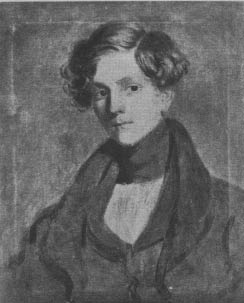
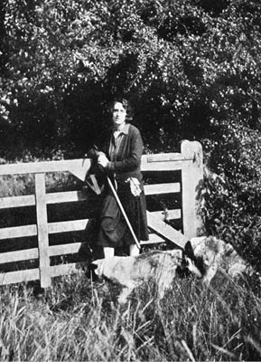

6. Bölüm
Orlando içeri girdi. İçeride çıt çıkmıyordu. Çok sessizdi. Mürekkep hokkası vardı: kalem vardı; sonsuzluğa bir övgünün ortasındayken yarıda bırakılmış şiirinin elyazması vardı. Basket ile Bartholomew çay servisiyle gelip konuşmasını böldüklerinde, hiçbir şey değişmez demek üzereydi. Ve sonra, üç buçuk saniye içinde her şey değişmişti – ayak bileğini kırmıştı, âşık olmuştu, Shelmerdine ile evlenmişti.
Bunu kanıtlayacak nikâh yüzüğü parmağındaydı. O yüzüğü oraya Shelmerdine’le tanışmadan önce kendisinin taktığı doğruydu, ama bu hiçbir işe yaramamıştı. Şimdi yüzüğü parmağında, kayıp çıkmamasına özen göstererek körinançlı bir saygıyla döndürüp duruyordu.
“Nikâh yüzüğü sol elin üçüncü parmağına takılmalı,” dedi, dersini dikkatle yineleyen bir çocuk gibi, “ancak öyle bir işe yarar.”
Böyle yüksek sesle konuştu, aslında bu kadar cafcaflı konuşmak istememişti, sanki fikrini almak istediği birinin kendisini duymasını ister gibiydi. Nihayet kafasını toplayabilmişti artık, davranışım çağın ruhu üzerinde nasıl bir etki bırakırdı acaba, diye düşünüyordu. Shelmerdine ile nişanlanması ve evlenmesi konusunda attığı adımların çağın ruhuna uygun düşüp düşmediğini öğrenmek için can atıyordu. Kendini daha eksiksiz hissediyordu. O boş arazide geçirdiği geceden beri parmağı, bir-iki önemsiz durum sayılmazsa, bir kez bile sızlamamıştı. Ama kuşku duyduğunu yadsıyamazdı. Evliydi, doğru; ama insanın kocası sürekli gemiyle Horn Burnu’nun çevresinde dolaşıyorsa buna evlilik denebilir miydi? İnsanın kocasından hoşlanması evlilik sayılır mıydı? İnsan başkalarından hoşlanırsa buna evlilik denir miydi? Ve nihayet, insan dünyada her şeyden çok şiir yazmak istiyorsa evlilik olur muydu bu? Kuşkuluydu.
Ama sınayacaktı bunu. Yüzüğe baktı. Mürekkep hokkasına baktı. Cesaret edecek miydi? Hayır etmeyecekti. Ama etmeliydi. Yo, yapamazdı. O zaman ne yapacaktı? Mümkünse bayılacaktı. Ama hayatında kendini hiç bu kadar iyi hissetmemişti.
“Lanet olsun!” diye bağırdı, eski halini andıran bir havayla. “Haydi bakalım!”
Ve kalemini mürekkebe iyice batırdı. Hiçbir patlama olmaması onu çok şaşırttı. Kalemi hokkadan çıkardı. Islaktı ama mürekkep damlamıyordu. Yazdı. Sözcüklerin çıkması zaman alıyordu, ama çıkıyorlardı. Ah, ama bir anlamları var mı? diye düşündü, kalemi yine o istemsiz muzipliklerinden birine girişmiş olabilir diye paniğe kapılarak. Okudu,
Ve sonra bir çayıra geldim, taze otları
ters lalelerin sarkan çanaklarıyla gölgelenen,
iç karartıcı ve yabancı görünüyordu o yılankavi çiçek,
donuk mora bürünmüş, Mısırlı kızlar gibi–
Orlando yazarken omzunun üstünden yazdıklarını okuyan bir güç (unutmayın ki insan ruhunun en karanlık tezahürleriyle uğraşıyoruz) hissetti ve “Mısırlı kızlar” diye yazdığında o güç ona durmasını söyledi. Otlar, der gibiydi güç, dadıların ellerindeki cetvelle yazının baş tarafına gitmeleri gibi, otlar tamam; ters lalelerin sarkan çanakları – harika; yılankavi çiçek – bir hanımefendinin kalemi için sert bir fikir belki, ama kuşkusuz Wordsworth onu kutsar; ama – kızlar? Kızlara gerek var mı? Horn Burnu’nda bir kocam var diyorsun, öyle mi? Eh, tamam, o zaman olur.
Ve böylece ruh yoluna devam etti.
Orlando şimdi ruhen (çünkü bütün bunlar ruhun içinde yer alıyordu) kendi çağının ruhu karşısında saygılıydı, örneğin –büyük şeyleri küçüklerle karşılaştıralım– bavulunun bir köşesinde bir tomar puro bulunduğunu bilen bir gezginin, bavulunun üzerine beyaz tebeşirle işaret koyan gümrük görevlisine saygı göstermesi gibi. Çünkü, aklındakileri dikkatle incelemiş olsaydı, o ruhun büyük bir kaçakçılık sayılacak ve yüklü bir ceza ödemesini zorunlu kılacak bir şey bulmayacağından hiç emin değildi Orlando. Kıl payı kurtulmuştu. Çağın ruhuna ustalıkla uyum gösterip parmağına bir yüzük takarak, çayırlarda bir koca bularak, doğayı sevip hicivci, kinik ya da ruhbilimci olmayarak –bu mallardan herhangi biri hemen yakalanabilirdi– çağın ruhunun koyduğu sınavı başarıyla geçmeyi becermişti. İçi rahatlayarak derin bir soluk aldı, almakta haklıydı da, çünkü bir yazarla çağın ruhu arasındaki ilişki büyük incelik ister ve yazarın çalışmalarının bütün başarısı bu ikisi arasındaki düzgün uyuma dayanır. Orlando öyle bir düzen kurmuştu ki, son derece mutlu bir konumdaydı; ne çağıyla mücadele etmesine ne de ona boyun eğmesine gerek olacaktı; o çağa aitti, ama kendisi olarak kalıyordu. Bu sayede şimdi yazabiliyordu ve yazdı da. Yazdı. Yazdı.
Kasım gelmişti. Kasımdan sonra aralık gelir. Sonra ocak, şubat, mart ve nisan. Haziran, temmuz, ağustos da peşlerinden. Bir sonraki ay eylüldür. Sonra ekim, ve böylece, dikkat, yeniden kasım ayında buluruz kendimizi, koca bir yılı tamamlamış olarak.
Bu şekilde biyografi yazmak, yararları olsa da, bir parça yavandır ve okur, eğer böyle devam edersek, takvimi kendisinin de ezbere bildiğini söyleyip şikâyet eder, böylece Hogarth Yayınevi’nin bu kitaba uygun gördüğü ücret her neyse onu harcamaktan kurtulur. Ama Orlando’nun şimdi bize yaptığı gibi, söz konusu kişi kendisini tatsız bir duruma sokarsa, biyografi yazarı ne yapabilir? Danışmaya değer fikir sahibi olan herkesin görüş birliğine vardığı gibi, romancı ya da biyografi yazarı için tek uygun konu hayattır; aynı söz sahibi kişiler, hayatın, bir koltukta sessizce oturup düşünmekle hiç ilgisi olmadığına karar vermişlerdir. Düşünce ve hayat iki zıt kutuptur. Bu nedenle –Orlando da şimdi bir koltukta oturup düşünüyor– o işini bitirene kadar takvimin aylarını ezbere sıralamaktan, tespih çekmekten, sümkürmekten, ateşi körüklemekten, pencereden dışarı bakmaktan başka yapılacak bir şey yok. Orlando öyle sessiz oturuyordu ki yere iğne düşse duyardınız. Keşke bir iğne düşseydi yere! O da bir tür hayat sayılırdı. Ya da eğer bir kelebek pencereden içeri kanat çırparak girseydi ve bir sandalyeye konsaydı, onun üzerine yazılabilirdi. Ya da varsayın ki Orlando ayağa kalktı ve bir arıyı öldürdü. O zaman hemen kalemlerimizi çıkarır yazardık. Çünkü kan dökülmüş olurdu, dökülen sadece bir arının kanı olsa da. Kan olan yerde hayat da vardır. Ve bir arıyı öldürmek, bir insanı öldürmekle kıyaslanınca son derece önemsiz sayılsa da, yine de romancılar ya da biyografi yazarları için böyle hayal kurmaktan, böyle düşünmekten, sabah akşam elinde sigarayla ve bir tabaka kâğıtla ve bir kalem ve mürekkep hokkasıyla koltukta oturmaktan daha uygun bir konudur. Keşke kitaba konu olanlar, diye yakınabiliriz (çünkü sabrımız taşmak üzere), biyografilerini yazanlara karşı daha düşünceli davransalar! Onca zaman ve çaba harcadığımız kişinin elimizden tümüyle kayıp gittiğini ve kendini koyuverdiğini –bunun kanıtı da içini çekmesi, soluğunu tutması, yüzünün kızarması, benzinin solması, gözlerinin kâh lambalar gibi ışıl ışıl kâh şafak ışığı gibi solgun olması– görmekten daha rahatsız edici; gözlerimizin önünde yer alan bütün bu budalaca duygu gösterisini ve heyecanı, onlara yol açan şeyin –düşünceler ve imgelemin– hiçbir önemi olmadığını bilirken, seyretmekten daha aşağılayıcı ne olabilir?

Marmadük Bonthrop Shelmerdine
Ama Orlando kadındı – Lord Palmerston bunu az önce kanıtlamıştı. Ve hepimiz hemfikiriz ki, bir kadının hayatını yazarken, eylem talebimizden feragat edip onun yerine aşkı koyabiliriz. Aşk, demiştir şair, bir kadının bütün varlığıdır. Masasında yazı yazmakta olan Orlando’ya bir an bakarsak, bu tanıma daha uygun bir başka kadın olmadığını itiraf etmemiz gerekir. Kuşkusuz, o bir kadın, hem de güzel bir kadın, altın çağında bir kadın olduğundan, çok geçmeden böyle yazarmış ve düşünürmüş gibi yapmaktan vazgeçecek, en azından bir av alanı bekçisini düşünmeye başlayacaktır (bir erkeği düşündüğü sürece kadının düşünmesine itiraz eden olmaz). Ve sonra erkeğe bir pusula yazacaktır (pusulalar yazdığı sürece bir kadının yazmasına kimse itiraz etmez) ve pazar günü günbatımında buluşmak üzere randevu verecektir ona, pazar günü günbatımında av alanı bekçisi pencerenin altında ıslık çalacaktır – bütün bunlar elbette hayatın malzemesidir ve kurmaca için tek olası konudur. Orlando bunlardan birini mutlaka yapmıştır, değil mi? Heyhat – binlerce kez, heyhat, Orlando hiçbirini yapmadı. Öyleyse Orlando’nun sevmekten nasibini almamış bir kötülük canavarı olduğunu itiraf etmeli miyiz? Köpeklere iyi davranıyor, arkadaşlarına sadık kalıyor, açlıktan ölen bir düzine şaire vermediği şey kalmıyor, şiire bayılıyordu. Ama – erkek romancıların betimlediği şekliyle aşkın –ne de olsa onlar tam bir otoritedir aşk konusunda– nezaketle, sadakatle, eli açıklıkla ya da şiirle bir ilgisi yoktur. Aşk insanın iç etekliğini sıyırıp – Ama aşkın ne olduğunu hepimiz biliyoruz. Orlando bunu yaptı mı? Dürüstlük, hayır demeye zorluyor bizi, hayır yapmadı. Yazdığımız biyografinin konusu olan kişi ne severse ne de öldürürse, sadece düşünüp hayal kurarsa, onun cesetten farkı olmadığına karar verir, yanından uzaklaşabiliriz.
Pencereden dışarı bakmaktan başka bir şey kalmıyor bize. Serçeler vardı; sığırcıklar vardı; birkaç güvercin vardı ve bir-iki de ekinkargası, hepsi kendince meşguldü. Biri bir solucan buluyor, öteki bir sümüklüböcek. Biri uçup bir dala konuyor, ötekisi çimenlerin üzerinde azıcık koşuyor. Sonra yeşil çuha önlüklü bir uşak avludan geçiyor. Herhalde çamaşırhanedeki hizmetçi kızlardan biriyle bir numara çeviriyor, ama avluda görünürde bir kanıt olmadığından, kötü bir şey olmadığını umup peşini bırakalım. İrili ufaklı bulutlar geçiyor aşağıdaki çimenlerin rengini hafifçe karartarak, güneş saati her zamanki gizemli tarzıyla saati bildiriyor. İnsanın aklından öylesine, boş yere, bu hayata dair bir-iki soru geçiyor. Hayat, ocaktaki bir çaydanlık gibi, diye şarkı söylüyor ya da daha ziyade mırıldanıyor. Hayat, hayat, nesin sen? Işık mısın ya da karanlık mı, uşak yamağının çuha önlüğü müsün ya da sığırcığın çimenlere vurmuş gölgesi mi?
O zaman haydi gelin keşfe çıkalım bu yaz sabahını, herkes erik çiçeklerini ve arıyı hayranlıkla seyrederken. Ve çöp kutusunun kenarına tüneyip içindeki çöplerin arasında bulaşıkçının dökülen saçlarını arayan sığırcığa (tarlakuşundan daha sokulgan bir kuştur o) ne düşüneceğini soralım, ağzımızın içinde geveleyerek. Çiftliğin giriş kapısına yaslanarak hayat nedir, diye soruyoruz; hayat, hayat, hayat! diye bağırıyor kuş, sanki bizi duymuş ve ne söyleyeceğini bilemeyen yazarlar gibi böyle rahatsız ederek, içerde de dışarıda da meraklı meraklı sorular sormamızın, gözetlememizin, papatya toplamamızın ne anlama geldiğini biliyormuş gibi. Sonra da buraya geliyorlar, diyor kuş, ve bana hayatın ne olduğunu soruyorlar; hayat, hayat, hayat!
Sonra kırdaki patikada yorgun argın yürüyüp şarap mavisi, koyu mor tepenin doruğuna çıkıyor, orada kendimizi yere atıyoruz, hayal kuruyoruz ve oyuktaki yuvasına bir saman çöpü taşıyan bir çekirge görüyoruz. Hayat çabalamaktır, diyor bize (onunki gibi keskin sözlere kutsal ve sevecen bir ad verilebilirse) ya da onun tozdan boğulmuş gırtlağından çıkan hırıltıyı böyle yorumluyoruz. Karınca da doğruluyor arılar da, ama burada pervanelere soracak kadar uzun kalırsak, akşam vakti soluk süpürgeotu çiçeklerinin arasından sürünerek gelince, kar fırtınalarında telgraf tellerinden çıkan sesler gibi çılgın, saçma sapan şeyler fısıldarlar kulağımıza; kah kah, keh keh. Kahkahalar, kahkahalar! diyor pervaneler.
İnsana ve kuşa ve böceklere sorular sorduktan sonra, çünkü balıkların ne konuştuğunu duymak için yeşil mağaralarda yıllarca bir başlarına yaşamış olan insanlar der ki, balıklar hayatın ne olduğunu asla söylemezler ve belki bu yüzden bilirler ne olduğunu – hepsine sorup bir şey öğrenemeyince, sadece yaşlanıp üşüyünce (arada sırada, bir kitabın içine hayatın anlamı olduğuna yemin edebileceğimiz kadar sağlam, az bulunur bir şey koymak için dua etmedik mi), geriye gitmeli ve hayatın ne olduğunu öğrenmek için merakla bekleyen okura açıkça söylemeliyiz – heyhat, bilmiyoruz.
Kitabın yok olmasına ramak kalmıştı ki, Orlando koltuğunu geriye itti, kollarını iki yana gerdi, kalemini bıraktı, pencereye geldi ve “Tamam!” diye bağırdı.
Gözlerinin önüne serilen olağanüstü manzara yüzünden neredeyse yere düşüyordu. Bahçe vardı karşısında ve kuşlar. Dünya her zamanki gibi dönüyordu. O yazdığı sürece dünya durmamıştı.
“Ben ölseydim de hiçbir şey değişmeyecekti!” diye bağırdı.
Duyguları öylesine yoğundu ki kendisinin yok olduğunu bile hayal edebiliyordu, belki gerçekten biraz kendinden geçer gibi de olmuştu. Bir an durup o güzel, durgun manzaraya gözlerini dikti. Sonunda garip bir şekilde kendine geldi. Kalbinin üzerindeki elyazması canlıymış gibi hışırdamaya ve zonklamaya başladı, daha da tuhafı, aralarında nasıl da mükemmel bir duygudaşlık olduğunu gösterecek şekilde, Orlando başını yana eğince onun ne söylediğini anlayabildi. Okunmak istiyordu. Okunmalıydı. Okunmazsa Orlando’nun göğsünde ölecekti. Hayatında ilk kez doğaya şiddetle sırt çevirdi Orlando. Av köpekleri ve gül çalıları bolca vardı çevresinde. Ama av köpekleri de gül çalıları da okuyamazdı. Ulu Tanrı’nın acınası bir ihmaliydi bu ve daha önce Orlando’nun hiç dikkatini çekmemişti. Sadece insanlar sahipti bu yeteneğe. İnsanlara ihtiyaç vardı şimdi. Çıngırağı çaldı. Arabanın kendisini hemen Londra’ya götürmesini istedi.
“On bir kırk beşe ancak yetişirsiniz Hanımefendi,” dedi Basket. Orlando buharlı makinelerin icat edildiğinin farkında değildi, kendisi acı çekmese de bütünüyle kendisine bağımlı bir insanın çektiği acılara öylesine dalmıştı ki ilk kez bir tren görüyor, bir kompartımanda oturuyordu, “son yirmi yılda (aslında tarihçilerin sandığından çok daha sık oluyor bu) Avrupa’nın yüzünü (tarihçilerin dediğine göre) bütünüyle değiştirmiş olan o muazzam icada” hiç aklını yormadan battaniyenin dizlerinin üzerine yerleştirilmesine izin vermişti. Sadece trenin çok kirli olduğunu fark etti; korkunç takırdıyordu; pencereler de sıkışmıştı, açılmıyordu. Düşüncelere dalmış halde, bir saatten az bir sürede kendini Londra’da buldu ve Charing Cross’taki peronda, nereye gideceğini bilemeden durdu.
On sekizinci yüzyılda çok keyifli günler geçirmiş olduğu Blackfriars’daki eski ev artık satılmıştı, bir kısmı Selâmet Ordusu’na, bir kısmı bir şemsiye fabrikasına. Kendisi May-fair’de başka bir ev satın almıştı, temiz, rahat ve sosyetik dünyanın tam merkezindeydi, ancak şiirinin arzusu Mayfair’de mi karşılanacaktı? Dua edelim ki, diye düşündü, leydi hazretlerinin gözlerinin ışıltısını ve lord hazretlerinin bacaklarının düzgünlüğünü hatırlayarak, orada okumaya başlamamış olsunlar. Yoksa çok yazık olurdu. Sonra bir de Leydi R.’nin evi vardı. Aynı tarzdaki konuşmalar orada hâlâ sürdürülüyor olmalıydı, bundan kuşkusu yoktu. General’in sol bacağındaki gut hastalığı sağ bacağına geçmiş olabilirdi belki. T. yerine R.’nin yanında on gün kalmış olabilirdi Mr. L. Sonra Mr. Pope içeri girerdi. A, ama ölmüştü Mr. Pope. Şimdiki nüktedanlar kim acaba, diye düşündü – ama bir kapıcıya sorulacak türden bir soru değildi bu, bu yüzden ilerledi. Şimdi sayısız atın kafasındaki sayısız çıngırağın çıngırtısı kulaklarına doluyordu. Sürü sürü tuhaf, tekerlekli, küçük kutular kaldırımın kenarına dizilmişti. Strand’e yürüdü. Oradaki gürültü daha da fazlaydı. Safkan atların ve yük beygirlerinin çektiği, tek bir yaşlı hanımı taşıyan ya da ipek şapkalı, bıyıklı erkeklerin ağzına kadar doldurduğu her boydan araç birbirine karışmıştı. Atlı arabalar, el arabaları, otobüsler onun uzun zamandır basit bir kâğıdın görüntüsüne alışmış gözlerine ürkütücü bir mücadele içinde görünüyorlardı; ve bir kalemin cızırtısına odaklı kulaklarına, sokaktaki sesler, şiddetli ve son derece uyumsuz seslerden oluşan bir gürültü olarak geliyordu. Kaldırımda adım atacak yer yoktu. İnsanlar akın akın, inanılmaz bir kıvraklıkla, başka insanların ve sıkışık, itiş kakış trafiğin arasına girip çıkarak durup dinlenmeden doğuya ve batıya akıyorlardı. Kaldırımın kenarında, ellerinde oyuncak dolu tepsiler tutan adamlar duruyor, avaz avaz bağırıyorlardı. Köşebaşlarında, içleri bahar çiçekleriyle dolu kocaman sepetlerin yanında oturan kadınlar avaz avaz bağırıyorlardı. Atların burunlarının dibinde koşuşturan, basılı kâğıtları göğüslerine bastıran oğlan çocukları da “Felaket! Felaket!” diye haykırıyorlardı. Orlando ilk başta, ulusal bir kriz yaşanan bir ana denk geldiğini sandı; ama mutlu bir an mı trajik bir an mı olduğunu bilemedi. İnsanların yüzlerine kaygıyla baktı. Ama aklı daha da karıştı. Bazen, korkunç bir kederin altında eziliyormuş gibi kendi kendine mırıldanan çaresiz bir adam çıkıyordu karşısına. Onun yanından geçen şişman, neşeli delikanlı ise bütün dünya şenlik içindeymiş gibi herkesi ite kaka yürüyordu. Sonunda Orlando bütün bunlara bir anlam veremeyeceğine karar verdi. Her kadın ve her erkek kendi meselesiyle meşguldü. Kendisi nereye gidecekti şimdi?
Düşünmeden yürümeye devam etti, sokakların birinden çıkıp ötekine girdi, içleri el çantaları, aynalar, sabahlıklar, çiçekler, balık oltaları ve yemek sepetleriyle dolu vitrinlerin önünden geçti; her renkten ve desenden, inceli kalınlı kumaşlar üstü üste yığılmış, bükülmüş, birbirine dolanmıştı. Bazen ciddi görünümlü evlerin önünden geçiyordu, bir, iki, üç filan diye basit numaralar taşıyan bu evlerin sayısı iki-üç yüzü buluyordu, hepsi birbirinin aynıydı, iki sütun, altı basamak, güzelce kapatılmış çift kanatlı perde, aile sofraları kurulu, pencerelerin birinden bakan bir papağan, bir diğerinden görünen bir uşak, sonunda bu tekdüzelik beynini uyuşturdu. Sonra, tam ortasında ceketleri sımsıkı ilikli şişman adamların siyah, cilalı heykelleri bulunan meydanlara geldi, savaş atları kasıla kasıla yürüyordu orada, yüksek sütunlar vardı, fıskiyelerden sular fışkırıyor, güvercinler kanat çırpıyordu. Evlerin arasındaki kaldırımlarda uzun uzun yürüdü, sonunda çok acıktı, kalbinin üstünde çırpınan bir şey, kendisini unuttuğu için sitem etti ona. Elyazmasıydı, “Meşe Ağacı”.
Onu ihmal ettiği için kahroldu. Olduğu yerde kalakaldı. Görünürlerde araba yoktu. Geniş ve şık cadde bomboştu. Sadece yaşlı bir beyefendi yaklaşmaktaydı. Yürüyüşünde Orlando’ya tanıdık gelen bir şey vardı. Adam yaklaştıkça onunla şu ya da bu zamanda karşılaştığına emin oldu. Ama nerede? Bu kadar temiz giyimli, iri yapılı, zengin, elinde bastonu, ceketinin yakasında çiçeğiyle, pembe, tombul yanakları, düzgün beyaz bıyığıyla bu beyefendinin... evet, yemin ederdi ki oydu! – eski, çok eski arkadaşı Nick Greene’di!
Aynı zamanda adam da ona baktı; Orlando’yu hatırladı; tanıdı. “Leydi Orlando!” diye bağırdı, selam vermek için çıkardığı ipek şapkasını neredeyse toza toprağa sürterek.
“Sir Nicholas!” diye haykırdı Orlando. Çünkü adamın tavrı, Kraliçe Elizabeth döneminde kendisini de başkalarını da hicvetmiş olan bu ağzı bozuk, berbat yazarın şimdi iyi bir konumda olduğunu ve mutlaka şövalyelik unvanı ve kuşkusuz onun yanında daha onlarca güzel şeye de sahip olduğunu sezdirmişti.
Tekrar eğilip selam veren adam, Orlando’nun düşüncesinde haklı olduğunu söyledi; şövalyeydi, edebiyat doktorası yapmıştı, profesör olmuştu. Pek çok kitap yazmıştı. Kısacası Viktorya döneminin en nüfuzlu eleştirmeniydi.
Yıllar önce canını çok yakmış olan bu adamla karşılaşmak Orlando’nun içinde bir duygu fırtınası yaratmıştı. Halılarını yakıp delen, İtalyan şöminesinde peynir kızartan, Marlowe ile ötekiler hakkında eğlenceli fıkralar anlatarak on gecenin dokuzunda güneş doğana kadar oturmalarına neden olan o baş belası, huzursuz adam bu olabilir miydi? Şimdi tertemiz giyinmişti, sırtında yakasına pembe bir çiçek takılı gri bir sabah elbisesi vardı, ellerinde de kıyafetine uygun gri süet eldivenler. Ama Orlando şaşkınlıkla bakarken adam bir kez daha eğildi önünde ve kendisiyle yemek yeme onurunu lütfeder mi diye sordu. Reveransı belki biraz abartılmış olabilirdi ama iyi yetiştirilmiş birini taklit etmesi takdire değerdi. Şaşkınlığı hâlâ süren Orlando onun peşinden harika bir restorana girdi, baştan aşağı kırmızı kadife döşeli, beyaz masa örtülü, gümüş çatal-bıçak takımları kullanılan bu restoran, kum döşeli zemini, tahta banklarıyla, punç ve çikolata çanakları, gazeteleri ve tükürük hokkalarıyla bildiği eski meyhaneyle ya da kahvehaneyle taban tabana zıttı. Nick Greene eldivenlerini masaya, yanıbaşına bıraktı. Orlando onun aynı kişi olduğuna hâlâ inanamıyordu. Tırnakları temizdi, oysa eskiden 2-3 santim uzun olurlardı. Sakalını tıraş etmişti, oysa eskiden simsiyah bir sakalı vardı. Altın kol düğmeleri takmıştı, oysa eskiden eprimiş gömleğinin kolu çorbaya dalardı. Greene şarap sipariş edene kadar –bunu, uzun zaman önce Malmsey’deki zevkini Orlando’nun aklına getirecek bir özenle yapmıştı– Orlando onun aynı kişi olduğuna emin olamadı. “Ah!” diye iç geçirdi Greene, epeyce rahattı, “Ah, sevgili hanımefendi, edebiyatın önemli olduğu günler geride kaldı. Marlowe, Shakespeare, Ben Johnson – bunlar dev isimlerdi. Dryden, Pope, Addison – bunlar birer kahramandı. Hepsi öldü artık. Ve bize kimleri bıraktılar? Tennyson, Browning, Carlyle!” – Sesine yoğun bir aşağılama sindi. “İşin aslı,” derken kadehine şarap doldurdu, “bütün genç yazarlarımız, kitapçıların bordrosunda. Terzi faturalarını ödemelerine yarayacak berbat şeyler yazıyorlar.” Ordövrlerden tabağına alırken, “Aşırı kibir ve çılgın deneyler çağındayız,” dedi, “Elizabeth dönemindekiler bunların hiçbirine bir an bile katlanamazlardı.”
“Hayır, sevgili hanımefendi,” diye devam etti, garsonun onaylasın diye sunduğu kalkan au gratin’i yana geçirirken, “altın çağ geride kaldı. Yozlaşmış bir devirdeyiz şimdi. Geçmişin değerini bilmeli, o yazarları takdir etmeliyiz – hâlâ birkaç tanesi hayatta – eskileri kendilerine örnek alıp yazıyorlar, para için değil de–” Burada Orlando az kalsın “Şöhret!” diye bağıracaktı. O adamın aynı şeyleri üç yüzyıl önce de söylemiş olduğuna yemin edebilirdi. İsimler farklıydı tabii, ama ruh aynıydı. Ne kadar şövalyelik taslasa da Nick Greene değişmemişti. Ama yine de bir değişiklik vardı. Çünkü Greene, Addison’un örnek alınmasını söyleyip dururken (bir zamanlar Çiçero idi örnek, diye düşündü Orlando) sabah yatakta yatıp (ona ödediğim üç aylık maaşlar sayesinde, diye düşündü Orlando gururla), kalemi kâğıda değdirmeden önce en azından bir saat boyunca, günümüzün bayağılığı ve anadilimizin içler acısı durumunun (Amerika’da uzun süre yaşamış olmalıydı Greene) arınmasına yardımı olabilir diye en iyi yazarların en iyi eserlerini dilinden düşürmezken – Greene’in üç yüz yıl önce yaptığı gibi davranırken, Orlando kendine “o zaman nasıl oldu da bu adam değişti” diye soracak zaman buldu. Kilo almıştı, ama ne de olsa yetmişine merdiven dayamıştı. Üstü başı daha düzgündü şimdi, belli ki edebiyat kazançlı bir meşguliyetti; ama nedense eski kıpır kıpır, huzursuz enerjisi yok olmuştu. Eskiden zekice olan hikâyeleri, artık özgür ve rahat değildiler. Doğru, iki dakikada bir “sevgili dostum Pope” ya da “ünlü arkadaşım Addison” diyordu, ama çevresinde örülü saygınlık halesi insanın içini karartıyordu, görünüşe bakılırsa da eskiden yaptığı gibi şairlerle ilgili skandalları anlatmak yerine Orlando’nun akrabalarının yaptıkları ve söyledikleri hakkında konuşmayı yeğliyordu.
Orlando nedense büyük bir hayalkırıklığına uğramıştı. Bunca yıldır edebiyatın (mazereti, inzivaya çekilmesi, mevkii, cinsiyeti olmalı), rüzgâr gibi vahşi, ateş gibi sımsıcak, şimşek gibi hızlı olduğunu düşünmüştü; maceraperest, ne yapacağı bilinemeyen, atak bir şeydi o, ama bakın işte, edebiyat, düşeslerden söz eden, gri takım elbiseli, yaşlıca bir beyefendiydi. Hayalkırıklığı öyle büyüktü ki giysisinin belden yukarısını tutturan bir kopça ya da düğme birden koptu ve masanın üzerine “Meşe Ağacı” şiiri fırlayıverdi.
“Bir elyazması!” dedi Sir Nicholas, altın kelebek gözlüğünü gözüne oturtarak. “Ne kadar ilginç, son derece ilginç! İzin verin de bakayım.” Ve bir kez daha, yaklaşık üç yüz yıllık bir aradan sonra Nicholas Greene, Orlando’nun şiirini aldı ve kahve fincanlarıyla likör kadehlerinin arasına koyarak okumaya başladı. Ama şimdiki kararı, eskiden vermiş olduğu karardan çok farklıydı. Sayfaları çevirirken bunun kendisine Addison’un Cato’sunu anımsattığını söyledi. Thomson’un Mevsimler’iyle de pekâlâ karşılaştırılabilirdi. Minnetle söyleyebilirdi ki, bu şiirde çağın ruhundan iz yoktu. Gerçeklik, doğa, insan kalbinin ilkeleri dikkate alınarak yazılmıştı, ki bu ahlaksız aşırılıklar döneminde böyle bir şeye pek rastlanmıyordu. Elbette ki hemen yayınlanmalıydı.
Orlando onun ne demek istediğini aslında anlamamıştı. O, yazdıklarını her zaman giysisinin altında, göğsünün üzerinde taşımıştı. Bu fikir Sir Nicholas’ın pek hoşuna gitti.
“Ama ya telifler?”26 diye sordu.
Orlando’nın aklı Buckingham Sarayı’na ve oradaki bazı esmer hükümdarlara gitti.
Sir Nicholas çok eğleniyordu. Yayıncının birine iki satır bir şey yazarsam onun (bu noktada tanınmış bir yayıncının adını verdi), o kitabı seve seve yayımlamak isteyeceğini kastediyordum, dedi. İki bin baskıya kadar yüzde onluk bir telif ayarlayabilirdi herhalde; iki binin üstü yüzde on beş olurdu. Eleştirmenlere gelince, bizzat kendisi –en nüfuzlu olan– Mr....’ye bir not yazacaktı, sonra ....’nin editörünün eşine iltifat edecekti –yazdığı şiirlere abartılı, küçük bir övgü– bir zararı olmazdı. ...’yi arayacaktı. Böylece anlatıp durdu. Orlando bütün bunlardan hiçbir şey anlamadı, eski deneyimlerine dayanarak da Sir Nicholas’ın iyi niyetine pek güvenmedi, ama görünüşe bakılırsa onun arzusuna ve bizzat şiirin coşkun arzusuna boyun eğmekten başka yapılacak bir şey yoktu. Böylece Sir Nicholas üzerinde kan lekesi olan paketi yeni bir kâğıda sardı; ceketinin duruşunu bozmasın diye yassılaştırıp göğüs cebine koydu; ikisi de birbirlerine övgüler yağdırdıktan sonra ayrıldılar.
Orlando sokakta yürüdü. Şiir gittiğine göre –göğsünde, şiiri taşıdığı yerde bir boşluk hissediyordu– artık canının istediğini –insanın kaderindeki olağanüstü fırsatları– düşünmekten başka yapacağı bir şey yoktu. İşte St. James Sokağı’ndaydı; evli bir kadın; parmağında bir yüzük; eskiden kahvehane bulunan yerde şimdi bir restoran vardı; saat öğleden sonra üç buçuktu; güneş parlıyordu; üç güvercin vardı; bir de melez teriyer köpek; iki tane tek atlı, çift tekerlekli binek arabası ve bir fayton. O zaman Hayat neydi? Bu düşünce, durup dururken (tabii yaşlı Greene buna neden olmamışsa) aklına saplandı. Ne zaman aklına bir fikir gelse hemen en yakındaki telgrafhaneye gider ve kocasına telgraf çekerdi, okur bunu (Horn’da bulunan) kocasıyla arasındaki ilişki açısından ele almayı seçerse, olumlu ya da olumsuz bir yorum sayabilir. Tesadüfen yakınlarda bir telgrafhane vardı. “Tanrım, Shel,” diye yazdı telgrafa, “hayat edebiyat Greene dalkavuk–” bunu yazarken, kocasıyla aralarında geliştirdikleri, en karmaşık bir ruhsal durumun tamamının bir-iki sözcüğe dönüştürülebildiği ve telgraf memurunun anlayamayacağı şifreli bir dile başvurdu, olayı eksiksiz özetleyen “Rattigan Glumphoboo” sözcüklerini ekledi. Çünkü Orlando’yu derinden etkileyen sadece sabahki olaylar değildi, Orlando’nun büyümekte olduğu okurun dikkatinden kaçmamıştır –bu onun daha iyiye gittiği anlamına gelmez– ve “Rattigan Glumphoboo” çok karmaşık bir ruhsal durumu betimliyordu– eğer okur bütün zekâsını çalıştırırsa bunu kendi başına keşfedebilir.
Birkaç saat telgrafına yanıt alamadı; üstteki bulutların hızla geçip gittiği gökyüzüne bakarak belki de Horn Burnu’nda fırtına çıkmıştır diye düşündü, kocası da bir direğin tepesindeydi, olabilirdi, ya da hırpalanmış bir seren direğini kesiyordu ya da tek başına bir sandaldaydı, elinde bir bisküviyle. Postaneden çıktı, yandaki dükkânın büyüsüne kapıldı, şimdi artık pek sıradan sayılan bir dükkândı bu, tarife bile gerek yok, ama Orlando’ya son derece garip gelmişti; kitap satılıyordu orada. Orlando ömür boyu elyazmalarını bilmişti; ellerinde Spencer’in küçük, okunaksız elyazısıyla doldurduğu kaba kahverengi kâğıtları tutmuştu; Shakespeare’in ve Milton’un yazdıklarını görmüştü. Gerçekten elinde hatırı sayılır sayıda quarto27 ve folio28 vardı, sıklıkla da içinde kendisini öven bir sone, hatta bazen bir tutam saçla birlikte. Ama parlak, ince kâğıda basıldıklarından ömürleri kısa olan, birbirinin aynısı, karton kapaklı, bu sayısız küçük kitap, Orlando’yu müthiş şaşırttı. Shakespeare’in bütün eserlerinin fiyatı iki buçuk şilindi ve cebinize sığıyordu. Aslında okumak pek zordu onları, harfler çok küçüktü, ama yine de harikaydı. “Eserler”– tanıdığı, adını duyduğu bütün yazarların ve daha fazlasının eserleri upuzun rafların bir ucundan öbür ucuna diziliydi. Masaların ve sandalyelerin üzerinde başka eserler üst üste, karmakarışık yığılmıştı, bir-iki sayfa çevirdiğinde gördüğü üzere bunların çoğu Orlando, bilgisiz olduğundan, kitaplar da ciltlenmiş ve basılmış olduklarından, onların da çok önemli yazarlar olduğunu sandığı daha sayısız kişinin eserleri üzerine Sir Nicholas’ın yazdığı kitaplardı. Dükkânda önemli ne varsa kendisine göndermeleri talimatını verip kitapçıyı şaşırtarak oradan çıktı.
Eskiden bildiği Hyde Park’a girdi (hatırladı, o yarık ağacın altında Lord Mohun Hamilton Dükü’nün bedenini ikiye biçmiş, Dük de düşüp ölmüştü), bu meselede genellikle suçlu bulunan dudakları, telgrafındaki sözleri anlamsız, tekdüze bir mırıltıya dönüştürmeye başladı; hayat edebiyat Greene dalkavuk Rattigan Glumphoboo; parktaki birkaç bekçi ona kuşkuyla baktılar, ancak boynundaki inci kolyeyi görünce akıl sağlığının yerinde olduğuna karar verdiler. Kitapçıdan bir tomar kâğıt ve eleştiri dergisi getirmişti, sonunda kendisini bir ağacın altına attı, dirseklerine dayanarak o kâğıtları etrafına yaydı, bu ustaların yazdıklarından soylu düzyazı sanatının içyüzünü öğrenmek için elinden geleni yaptı. Çünkü hâlâ eskisi gibi saftı; haftalık bir derginin bulanık harfleri bile onun gözünde kutsaldı. Dirseğine dayandı, Sir Nicholas’ın, kendisinin bir zamanlar tanıdığı birinin –John Donne’un– toplu eserleri üzerine yazdığı bir makaleyi okudu. Ama farkına varmadan Serpentine gölünün yakınında oturmuştu. Kulaklarında binlerce köpeğin havlaması çınlıyordu. Arabaların tekerlekleri sürekli dönüp duruyorlardı. Başının üstünde yapraklar soluk alıyordu. Ara sıra, birkaç adım uzağında, süslü bir etek ve dar kırmızı bir pantolon çayırdan geçiyordu. Bir seferinde kocaman bir lastik top gazetenin üzerinde zıpladı. Morlar, turuncular, kırmızılar ve maviler yaprakların aralıklarından girdiler ve parmağındaki zümrütte ışıldadılar. Bir cümle okuyup göğe baktı, sonra da gazeteye. Hayat mı? Edebiyat mı? Biri ötekinin içine mi geçirilecek? Ama bu ne kadar zordu! Addison olsa –işte dar, kırmızı bir pantolon geçiyordu yanından– bunu nasıl ifade ederdi? Arka ayaklarının üzerinde dans ederek iki köpek geliyordu. Lamb olsa bunu nasıl anlatırdı? Çünkü Sir Nicholas’ı ve arkadaşlarını okurken (etrafını seyretmeye ara verince yapıyordu bunu) onların insana düşündüğünü asla, asla söylememesi gerektiğini hissettirdikleri duygusuna kapıldı –bu noktada ayağa kalkıp gezindi– ve bu son derece rahatsız edici bir duyguydu. (Serpentine gölünün kıyısında duruyordu. Su bronz renkteydi; incecik tekneler suyun üzerinde kıyıdan kıyıya kayıyorlardı.) İnsana, diye devam etti, hep ama hep bir başkası gibi yazması gerektiğini hissettiriyorlardı. (Gözleri yaşla doldu.) Ayağının ucuyla küçük bir tekneyi öteye iterken, sanmıyorum ki (burada Sir Nicholas’ın makalesinin tamamı, okuduktan on dakika sonra hep olduğu gibi, gözlerinin önüne geldi, odasının, başının, kedisinin, çalışma masasının görünüşüyle ve o günün saatiyle birlikte) sanmıyorum ki diye devam etti, makaleyi bu bakış açısından ele alarak, bütün gün bir çalışma odasında oturup, yo çalışma odası değil, küflü denebilecek bir misafir odası, yakışıklı genç erkeklerle konuşabileyim ve onlara, Tupper’ın Smiles hakkında neler söylediğine dair başkalarına anlatmamaları gereken fıkralar anlatayım; ve sonra, diye devam etti, acı acı ağlayarak, hepsi de öyle erkekçe ki; hem ben düşeslerden nefret ederim; pasta da sevmem; yeterince kindar olsam da bütün bunlar kadar kindar olamam, o zaman nasıl bir eleştirmen olabilirim ve İngilizcede günümüzün en iyi düzyazılarını yazabilirim? Lanet olsun! diye bağırdı ve bir meteliklik bir gemiyi öyle sertçe itti ki suya, zavallı küçük tekne bronz sularda neredeyse batıyordu.
İşin aslı şu ki insanın (hemşirelerin deyişiyle) ruh hali değişince –Orlando’nun gözleri hâlâ yaşlıydı– insanın baktığı şey o şeyin kendisi değil bir başka şey olur, daha büyük, çok daha önemli bir şey, yine de aynı şey olarak kalır. Bu ruh hali içindeyken Serpentine’a bakarsak dalgalar çok geçmeden Atlas Okyanusu’ndaki dalgalar kadar büyürler; oyuncak tekneleri kruvazörlerden ayırt edemezsiniz. Bu yüzden Orlando da oyuncak tekneyi kocasının iki direkli gemisi sandı; ayağının ucuyla yaratmış olduğu dalgayı da Horn Burnu açıklarında bir su dağı; oyuncak teknenin küçük dalgaya tırmanmasını seyrederken Bonthrop’un gemisinin camdan bir duvarın yukarılarına tırmandığını düşündü; çıktıkça çıktı, dalganın içinde binlerce ölüm barındıran beyaz tepesi geminin üstünde kavislendi; gemi binlerce ölümün arasından geçip gözden kayboldu –“Battı!” diye bağırdı Orlando, acıyla– ve sonra, şu işe bakın, tekne yine sağ salim Atlas Okyanusu’nun öbür tarafında ördeklerin arasında yol aldı.
“Coşku!” diye haykırdı. “Coşku! Postane nerede?” diye sordu. “Hemen Shel’e telgraf çekip demeliyim ki...” Sırayla “Serpentine’da bir oyuncak tekne” ve “Coşku” diye yineledi çünkü düşünceleri birbirinin yerini alabiliyordu ve hep aynı anlama geliyorlardı, Park Lane’e doğru koşar adım gitti.
“Oyuncak tekne, oyuncak tekne, oyuncak tekne,” dedi üst üste, böylece ne Nick Greene’in John Donne üzerine makalelerinin, ne sekiz saatlik önergelerin, ne sözleşmelerin, ne de sanayi işgücü yasalarının önemli olmadığını beynine işledi; önemli olan yararsız, ani, şiddetli bir şeydir; bir hayata mal olur; kırmızı, mavi, mor; bir keyif; bir fiyaka; şu sümbüller gibi (bir sümbül tarhının yanından geçiyordu); kusursuz, bağımsız, insanların kirletmesinden ya da kendi cinsine gösterilen özenden uzak; ihtiyatsız, gülünç bir şey, tıpkı sümbülüm, kocam Bonthrop gibi demek istiyorum; bu işte o –Serpentine’da bir oyuncak tekne, coşku– önemli olan coşku. Böyle dedi yüksek sesle, Stanhope Kapısı’nda arabaların geçmesini beklerken, çünkü rüzgârın dindiği zamanlar dışında insanın kocasıyla yaşamamasının sonucu, Park Lane’de yüksek sesle saçma sapan konuşmasıdır. Kraliçe Victoria’nın tavsiye ettiği gibi yıl boyunca onunla birlikte yaşasaydı farklı olurdu tabii. Ansızın kocası düştü aklına. Hemen ve mutlaka onunla konuşmalıydı. Bunun nasıl bir saçmalık olacağı umurunda değildi ya da hikâyenin yönünü nasıl değiştireceği. Nick Greene’in makalesi onu umarsızlığa boğmuştu; oyuncak tekneyse neşenin doruğuna çıkarmıştı. Bu yüzden, “Coşku, coşku!” diye yineledi, karşıdan karşıya geçmek için beklerken.
Ama o ilkbahar ikindisinde yoğun bir trafik vardı, bu yüzden coşku, coşku ya da Serpentine’da bir oyuncak tekne diye yineleyerek orada kaldı, aynı anda İngiltere’nin varlık ve iktidar sahibi kişileri, şapkaları ve pelerinleriyle, dört atlı ya da körüklü arabalarında, faytonlarında heykel gibi oturuyorlardı. Sanki altın bir nehir pıhtılaşıp katılaşmış, Park Lane’de altından bloklar halinde kütleleşmişti. Hanımlar ellerinde kartvizit kutuları tutuyorlardı; beyefendiler altın kakmalı bastonlarını dizlerinin arasında dengeliyorlardı; Orlando orada hayran hayran, huşu içinde gözlerini dikip durdu. Kendisini rahatsız eden bir tek düşünce vardı, inanılmaz büyüklükte balinalar ya da iri filler görenlerin bildiği bir düşünceydi bu: stres, değişiklik ve faaliyetten hoşlanmadıkları belli olan bu canavarlar kendi türlerini nasıl devam ettiriyorlardı? Belki, diye düşündü Orlando, o heybetli, sakin suratlara bakarak, onların üretme zamanları geçmiştir; meyve budur; mükemmele erişme budur. Şimdi gördüğü, bir çağın zaferiydi. Orada heybetle ve görkemle oturuyorlardı. Ama polis elini indirdi, akıntı akışkanlaştı, iri bir yığın halindeki görkemli nesneler hareket etti, dağıldı ve Piccadilly’de gözden kayboldu.
Orlando, Park Lane’den geçti, Curzon Sokağı’ndaki evine gitti, çayırmelikeleri dalgalandığında orada çullukların öttüğünü ve elinde tüfek tutan çok yaşlı bir adam olduğunu hatırlayabiliyordu.
Evinin kapısının eşiğinden geçerken, Lord Chesterfield’in sözlerini hatırladığını düşündü – ama belleği çalışmıyordu. Seyretmesi zevk veren zarif tavırlarla şapkasını buraya, paltosunu şuraya bırakan Lord Chesterfield’i görür gibi olduğu on sekizinci yüzyıldan kalma iddiasız salonunu şimdi baştan aşağı paketler doldurmuştu. Kendisi Hyde Park’ta otururken kitapçı siparişini teslim etmişti, bütün ev gri kâğıda sarılıp iple sıkıca bağlanmış bütün bir Viktorya dönemi edebiyatıyla dolup taşıyordu. Taşıyabildiği kadar paketi odasına götürdü, kalanları getirmeleri için uşaklara emir verdi, sayısız ipi hızla kesti ve çok geçmeden sayısız kitapla çevrili buldu kendini.
On altıncı, on yedinci ve on sekizinci yüzyılların küçük edebiyatlarına alışık olduğundan siparişinin sonuçları Orlando’yu şaşkına çevirdi. Çünkü Viktorya dönemi insanları için Viktorya dönemi edebiyatı sadece öne çıkan dört ayrı ve önemli isimden ibaret değildi, Alexander Smithler, Dixonlar, Blackler, Milmanlar, Bucklelar, Taineler, Payneler, Tupperlar, Jamesonlar’dan oluşan bir kütlenin içine batmış, gömülmüş dört isimdiler – bu sayılanların hepsi de konuşkan, yaygaracı, seçkindi ve hepsi de başkalarına gösterilen ilgiyi bekliyordu. Orlando’nun basılı şeylere duyduğu saygı zor bir görevle karşı karşıyaydı, Mayfair’deki yüksek binaların arasından ne kadar ışık sızabilecekse ondan yararlanmak amacıyla sandalyesini pencerenin önüne çekti ve bir karara varmaya çalıştı.
Viktorya dönemi edebiyatı konusunda bir karara varmak için önümüzde iki yol bulunduğu artık belli – ya onunla altmış cilt doldurmak ya da onu bu satır uzunluğunda altı satıra sığdırmak. Zamanımız azaldığından, tasarruf etmek amacıyla ikinci yolu seçmek durumundayız; öyleyse ilerleyelim. Yarım düzine kitabı açtıktan sonra Orlando aralarında bir asile ithaf edilmiş tek bir satır bile bulunmamasının çok garip olduğu sonucuna vardı; sonra (bir öbek anı kitabını karıştırarak) bu yazarlardan birçoğunun soyağacının kendisininkinin yarı boyunda olduğu; sonra, Miss Christina Rossetti çaya geldiğinde on poundluk bir banknotu şeker tutacağının etrafına dolamanın son derece uygunsuz düşeceği; sonra (yemeklerle kutlanacak yüzüncü yıldönümleri için yarım düzine davetiye vardı) bunca yemeğe katılan edebiyatın mutlaka fazlasıyla semirdiği; sonra (şunun üzerinde bunun etkisi; Klasik canlanış; romantik kalıntı; benzer çekicilikte başka başlıklar altında bir sürü konferansa davet edilmişti) bütün bu konferansları dinleyen edebiyatın çok yavanlaştığı; sonra (bir leydinin verdiği bir davete katılmıştı) bütün bu kürk atkıları taşıyan edebiyatın büyük saygınlık kazandığı; sonra (Carlyle’ın Chelsea’deki ses geçirmez odasını ziyaret etmişti) bütün bu şımartmalara ihtiyaç duyan dehanın pek kırılganlaştığı sonucuna vardı; sonunda nihai sonucu çıkardı, bu çok önemliydi ama altı satırlık limitimizi çoktan aştığımızdan, hangi sonuca vardığını söyleyemiyoruz.
Bu sonuca varan Orlando uzun bir süre durup pencereden dışarı baktı. Çünkü insan bir karara varırsa, sanki topu ağın üstünden aşırmış gibi olur ve görünmeyen hasmının topu kendisine geri atmasını beklemesi gerekir. Acaba Chesterfield Binası’nın üstündeki soluk gökyüzünden bana ne gönderilecek diye merak etti. Ellerini kavuşturarak uzun uzun durup düşündü. Birden irkildi – burada, daha önce de olduğu gibi Saffet Hanımefendi, İffet Hanımefendi ve Terbiyeli Hanımefendi’nin kapıyı aralayıp en azından soluk alınacak bir boşluk sunmalarını dileyebiliriz ancak, o zaman şimdi hassasiyetle anlatılması gereken şeyi, bir biyografi yazarına yakışacak şekilde nasıl toparlayacağımızı düşünebiliriz. Ama hayır! Beyaz giysilerini Orlando’nun üzerine attıktan ve birkaç santim uzağına düştüğünü gördükten sonra bu hanımefendiler yıllarca onunla her türlü iletişimi kestiler; şimdi başka meşguliyetleri vardı. Öyleyse bu soluk mart sabahında bu yadsınamaz olay her neyse onu hafifletmek, örtmek, üstünü kapamak, gizlemek, küçültmek için hiçbir şey olmayacak mıydı? Çünkü öyle birden ve şiddetle irkilmesinin ardından Orlando – ama Tanrıya şükür tam o anda dışarıda İtalyan laternacıların arka sokaklarda bazen çaldıkları şu narin, tiz, sesi flüte benzeyen, titrek, eski moda laternalardan biri çalmaya başladı. Mütevazı olsa da bu müdahaleyi göklerden gelen bir müzikmiş gibi kabullenelim ve gelişini yadsıyamayacağımız bir an gelene kadar bu sayfayı bütün o soluksuz kalışlarının ve inleyişlerinin sesleriyle doldurmasına izin verelim; onun geldiğini uşak da görmüştür, hizmetçi kız da; okur da görecektir; çünkü Orlando’nun da onu daha fazla görmezlikten gelemeyeceği belli – bırakalım laterna çalsın ve müzik çaldığında dalgaların üzerinde sağa sola savrulan küçük bir sandaldan başka bir şey olmayan düşüncelere götürsün bizi; bütün taşıtlar arasında en hantalı, en şaşkını olan düşüncelerin üzerinde, damların ve çamaşır asılı arka bahçelerin üstünden geçirsin ve oraya – neresi bu yer? Green’i tanıyabildiniz mi ve ortadaki kilise kulesini, ve her iki yanında uyuyan birer aslan olan bahçe kapısını? Ah evet, orası Kew! Eh, Kew olur. Kew’deyiz, size bugün (Mart’ın ikisinde) erik ağacının altında, bir salkımsümbül ve bir çiğdem göstereceğim ve bir de tomurcuk, badem ağacında; öyle ki oraya yürümek, ekim ayında toprağa gömülen, şimdi çiçeklenen tüylü ve kırmızı çiçek soğanlarını düşünmek demek olsun; dürüstçe söylenebilecekten daha fazlasını düşlemek ve sigara tabakasından bir sigara, hatta puro almak ve bir meşenin altına bir pelerin sermek (uyak gereği) ve orada oturup bir keresinde akşam vakti kıyıdan kıyıya geçerken görüldüğü söylenen yalıçapkınını beklemek olsun.
Bekleyin! Bekleyin! Yalıçapkını geliyor; yalıçapkını gelmiyor.
Bu arada fabrika bacalarına ve çıkan dumana bakın; kürekli kayıklarında hızla geçen kâtiplere bakın. Köpeğini gezdiren yaşlı hanıma bakın ve yeni şapkasını ilk kez, yamuk takan hizmetçi kıza. Hepsine bakın. Belki de Tanrı bütün kalplerdeki sırların gizlenmesi emrini vermiştir, böylece biz de aldanır, var olmayan bir şeyden sonsuza kadar kuşkulanırız, yine de sigaramızın dumanının arasından bakıp bir şapka, bir sandal, hendekteki bir fare için duyduğumuz doğal arzuların yeniden alevlendiğini görür, onların muhteşem bir şekilde yerine gelmesine seviniriz; tıpkı bir zamanlar İstanbul yakınındaki bir çayırda, arka planda minarelerle –bunun gibi fincanından tabağına taşınca ve laterna da çalınca zihin böyle oradan oraya saçma sapan atlayıp zıplıyor– bir ateşin tutuşmasının görüldüğü gibi.
Selam! Doğal arzu! Selam! Mutluluk! İlahi mutluluk! Ve her türden zevk, çiçekler ve şarap, biri solup öteki sarhoş etse de; ve Pazar günleri Londra dışına iki buçuk şilinlik biletler ve karanlık bir şapelde ölüme dair ilahiler okumak ve daktilo makinelerinin tıkırtısına, mektupların dosyalanışına, İmparatorluğu bir araya getiren halkaların ve zincirlerin dökümüne engel olacak ve karşı çıkacak her şey, her şey. Hatta tezgâhtar kızların dudaklarındaki kaba, kırmızı yaylara bile selam (sanki sakar aşk meleği başparmağını kırmızı mürekkebe batırmış da geçerken bir işaret kondurmuş). Selam mutluluk, kıyıdan kıyıya hızla giden yalıçapkını ve doğal arzunun yerine getirilişi, ister erkek romancının dediği şey olsun ister dua ya da yadsıma; hangi biçimde gelirse gelsin, daha başka, daha tuhaf biçimler bile olsa, selam! Çünkü nehir –şiirde “düş gibi” denilen keşke gerçek olsaydı– karanlık akar, ancak bizim her zamanki kaderimizden daha durgun ve daha kötüdür, hayalleri yoktur ama canlı, temiz, hareketlidir, zeytin yeşili gölgeleri ansızın kıyıdan kıyıya fırlayıp gözden kaybolmakta olan kuşun kanatlarının mavisini boğan ağaçların altından alışıldık şekilde akar.
Selamla öyleyse mutluluğu ve mutluluktan sonra, taşralı bir hanımın salonundaki lekeli aynaların suratımızı bulanık göstermesi gibi imgeleri bulanıklaştıran düşleri selamlama; bütünü dağıtan, bizi parçalayan ve sarıp sarmalayan ve geceleyin uyuyacakken parçalara ayıran düşleri; ama uyu, o kadar derin uyu ki, bütün biçimler ufalanıp en yumuşacık toza, içi görünmez karanlık sulara dönüşsün ve orada, bir mumya gibi, bir pervane gibi kıvrılıp, büzülüp uykunun dibindeki kumlara yüzükoyun yatalım.
Ama bekle! Ama bekle! Bu sefer kör ülkeyi ziyarete gitmeyeceğiz. Tam gözbebeğinin içinde çakılmış bir kibrit gibi mavi, uçuyor, yanıyor, uykunun mührünü patlatıyor; yalıçapkını; öyle ki şimdi, hayatın kırmızı, derin nehri bir gelgit gibi geriye akıyor yine; köpürerek, damla damla; ve biz kalkıyoruz, gözlerimiz (ölümden hayata olan zorlu geçişi aşmamız için bir şiir nasıl da yardımcı olur) – değiyor (laterna ansızın susar).
“Çok güzel bir oğlan çocuk, hanımefendi,” dedi ebe Mrs. Banting, Orlando’nun ilk çocuğunu kollarına bırakırken. Diğer bir ifadeyle, Orlando 20 Mart Salı günü, sabahın üçünde salimen bir oğlan çocuğu dünyaya getirdi.
* * *
Orlando bir kez daha pencerede durdu, ama okur hiç korkmasın; bugün aynı şey olmayacak, zaten kesinlikle aynı günde değiliz. Hayır – çünkü Orlando’nun o sırada yaptığı gibi pencereden baktığımızda Park Lane’in bile önemli ölçüde değiştiğini göreceğiz. Gerçekten de orada, Orlando’nun şimdi yaptığı gibi on dakika kadar durabiliriz ve tek bir fayton bile görmeyebiliriz. “Şuna bakın!” diye bağırdı Orlando, birkaç gün sonra, tepesi basık, tuhaf, atsız bir araba kendi kendine sağa sola kayarak gitmeye başladığında. Gerçekten de atsız bir araba! Bunu dediği anda biri çağırdı onu, ama bir süre sonra Orlando geri geldi ve yine pencereden dışarı baktı. Bugünlerde hava çok tuhaftı. Gökyüzü bile, diye düşündü elinde olmadan, değişmişti. Kraliçe Victoria’nın ardından Kral Edward –bakın işte oradaydı, karşıda oturan bir hanımefendiyi ziyaret etmek üzere zarif kupa arabasından iniyordu– tahta çıkalı beri artık eskisi gibi yoğun, nemli, prizmatik değildi. Bulutlar küçülüp incecik bir tül olmuşlardı; gökyüzü metalden yapılma gibiydi, sıcak havada, sisteki metaller gibi petrol yeşili, bakır rengi ya da turuncuya dönüşüyorlardı. Biraz ürkütücüydü bu küçülme. Her şey küçülmüş gibiydi. Dün gece Buckingham Sarayı’nın önünden geçerken, sonsuza kadar süreceğini sandığı o devasa yapıdan eser yoktu; silindir şapkalar, dul kadınların peçeleri, borazanlar, teleskoplar, çelenkler, hepsi kaybolmuş ve bir iz, kaldırımda bir su birikintisi bile bırakmamışlardı. Ama değişiklik şimdi –kısa bir aradan sonra pencerenin yanındaki en sevdiği yere dönmüştü Orlando–, şimdi, akşam vakti en çok dikkat çekiyordu. Evlerdeki ışıklara bakın! Bir dokunuşta bütün oda aydınlanıyordu; yüzlerce oda aydınlanıyordu; hepsi birbirinin aynıydı. Küçük, kare kutulardaki her şeyi görebiliyordu insan; mahremiyet yoktu; ne eskisi gibi o uzayan gölgeler ve kuytu köşeler vardı ne de ellerindeki titrek lambaları dikkatle şu ya da bu sehpanın üzerine bırakan önlüklü kadınlar; bir dokunuşta bütün oda pırıl pırıl oluyordu. Gökyüzü sabaha kadar ışıl ışıldı; kaldırımlar da ışıl ışıldı; her şey ışıl ışıldı. Öğleyin aynı yere tekrar geldi Orlando. Son zamanlarda kadınlar ne kadar da incelmişlerdi! Mısır sapı gibiydiler, dimdik, pırıltılı, birbirinin eşi. Erkeklerin yüzleri de avuç içi gibi tüysüzdü. Atmosferin kuruluğu her şeyin rengini koyultuyor, sanki yanaklardaki kasları sertleştiriyordu. Artık ağlamak daha zordu. Su, iki saniyede ısınıyordu. Sarmaşıklar ya yok olmuş ya da binaların yüzeyinden kazınmıştı. Sebzeler daha verimsizdi; aileler çok daha küçüktü. Perdeler ve örtüler kıvrılmış, duvarlar boş kalmıştı, sokaklar, şemsiyeler, elmalar gibi gerçek nesnelerin yeni, parlak renkli resimleri çerçevelenip asılmıştı ya da tahta üzerine boyanmıştı. O çağda Orlando’ya on sekizinci yüzyılı hatırlatan bir kesinlik ve belirginlik var gibiydi, tek fark bir çılgınlık, umarsızlık da içermesiydi. O bunları düşünürken, görünüşe bakılırsa yüzyıllardır içinden geçtiği müthiş uzun tünel genişledi, içeriye ışık doldu; bir piyano akortçusu anahtarını Orlando’nun sırtına sokmuş ve sinirlerini iyice germiş gibi düşünceleri tuhaf bir biçimde daraldı ve gerginleşti; aynı zamanda kulakları hassaslaştı; odadaki her fısıltıyı, her çıtırtıyı duyar oldu, şöminenin üzerindeki saatin tıkırtısı çekiç darbeleri gibiydi. Ve birkaç saniye boyunca ışık parlaklaşmaya devam etti, Orlando her şeyi daha da berrak görmeye başladı, saatin tıkırtısı şiddetlendi, sonunda tam kulağının içinde büyük bir patlama oldu. Orlando başına sert bir darbe almış gibi sıçradı. On kez yedi bu darbeleri. Aslında saat sabahın onuydu. Ekim’in on biriydi. 1928 yılıydı. Şimdiki zamandı.
Orlando’nun irkilmesine, elini kalbine bastırmasına ve yüzünün sararmasına kimse şaşırmamalı. Çünkü, şimdiki zamanda bulunulmasından daha korkunç bir aydınlanma olabilir mi? Şoku atlatmamız, ancak bizi bir taraftan geçmişin öbür taraftan geleceğin korumasıyla mümkündür. Ama şimdi düşünecek zamanımız yok; Orlando zaten çok geç kalmıştı. Aşağıya koştu, otomobiline atladı, kontağı çalıştırdı ve yola çıktı. Büyük mavi bina blokları havaya yükseliyordu; gökyüzünün orasında burasında kırmızı baca şapkaları görüldü; yol gümüş başlı çiviler gibi parıldadı; donuk beyaz suratlı sürücülerin kullandığı otobüsler üstüne üstüne geldiler; süngerler çarptı gözüne, kuş kafesleri, yeşil Amerikan bezi dolu kutular. Ama şimdiki zamanın daracık köprüsünün üzerinden geçerken, aşağıdaki köpüren sulara düşmemek için bütün bu görüntülerin zihnine bir milim bile işlemesine izin vermedi. “Önünüze baksanıza... Elinizi uzatın, becerebilir misiniz bunu?” Ancak bunları söyleyebildi sertçe, sözcükler sanki içinden fışkırıyormuş gibi. Çünkü sokaklar çok kalabalıktı; insanlar nereye gittiklerine bakmadan yürüyorlardı. İnsanlar, içinde bir kırmızı parıltısı, bir sarı çakması görülebilen vitrin camlarının çevresine üşüşüp vızıldıyorlardı, arılar gibi, diye düşündü Orlando, ama bu düşüncesi ansızın kesildi, gözünü bir kez kırpmasıyla görüş alanı yeniden açılan Orlando onların insanlar olduğunu gördü. “Önünüze baksanıza!” diye terslendi.
Nihayet Marshall&Snelgrove’un önüne gelince mağazaya girdi. Gölgeler ve rayihalarla kuşatıldı. Şimdiki zaman üzerinden kaynar su damlaları gibi akıp gitti. Bir yaz esintisinin havalandırdığı incecik örtüler gibi yukarı aşağı salındı ışık. Orlando çantasından bir liste çıkardı ve ilk başta tuhaf, gergin bir sesle okumaya başladı, sanki sözcükleri –oğlan için bot, banyo tuzları, sardalyeler– rengârenk su akan bir musluğun altında tutuyordu. Işık üzerlerine vurdukça onların nasıl değiştiklerini gözledi. Banyo ve botlar köreldiler, kütleştiler; sardalyeler testere gibi diş diş oldular. Marshall&Snelgrove Mağazası’nın zemin katındaki bölümde durdu, oraya buraya baktı; şu ya da bu kokuyu kokladı ve böylece birkaç saniye geçirdi. Sonra, sırf kapısı açık diye asansöre bindi; ve sarsılmadan yukarı gönderildi. Hayatın asıl dokusu, diye düşündü, yukarı çıkarken, büyü. On sekizinci yüzyılda her şeyin nasıl yapıldığını bilirdik; ama burada havanın içinden geçerek yükseliyorum; Amerika’daki sesleri dinliyorum; insanların uçtuğunu görüyorum – ama nasıl yapıldığını merak etmeye bile başlayamıyorum. Böylece büyüye olan inancım geri dönüyor. Asansör birinci katta dururken hafifçe sarsıldı; Orlando sayısız renkli kumaşın, belli belirsiz, tuhaf kokular yayan bir esintide uçuştuğunu görür gibi oldu; asansör her durduğunda ve kapıları açıldığında, o dünyanın bir dilimi daha içerdiği bütün kokularla birlikte göründü. Aklına Elizabeth döneminde, Wapping açıklarındaki nehir geldi, define gemileriyle ticaret gemileri demirlerdi orada. Ne kadar ağır ve tuhaf kokarlardı! İçi yakut dolu bir define çuvalına elini sokup onlarla oynadığında parmaklarının arasından kayan yontulmamış yakutların dokunuşunu nasıl da hatırlıyordu! Ve sonra Sukey ile –ya da kızın adı her ne idiyse– yatması ve Cumberland’in fenerinin üzerlerinde parlaması! Şimdi Cumberland’lerin Portland Meydanı’nda bir evleri vardı, geçen gün onlarla öğle yemeği yemişti, yaşlı adama Sheen Yolu’ndaki yaşlılar eviyle ilgili takılmıştı. Adam göz kırpmıştı. Şimdi asansör daha yükseğe çıkamadığı için inmesi gerekiyordu. Kim bilir hangi “bölüm” dedikleri yere. Alışveriş listesine göz atmak için durdu, ama etrafta bir yerde listede yazılı banyo tuzlarını ya da çocuk botlarını görse şaşardı. Nitekim hiçbir şey almadan yeniden aşağıya inmek üzereydi ki, listesindeki son kalemi farkında olmadan yüksek sesle okuyunca rezil olmaktan kurtuldu; o kalem “çift kişilik yatak çarşafı”ydı.
“Çift kişilik yatak çarşafı,” dedi tezgâhta duran bir adama ve kaderin bir cilvesi olarak tam da o tezgâhtaki adam çarşaf satıcısıydı. Çünkü Grimsditch, yo, Grimsditch ölmüştü; Bartholomew, yo, Bartholomew ölmüştü; öyleyse Louise – dün Louise heyecan içinde gelmişti yanına, kral yatağındaki çarşafın ucu delinmiş, demişti. O yatakta pek çok kral ve kraliçe yatmıştı – Elizabeth, James, Charles, George, Victoria, Edward; çarşafın delik olmasına şaşmamalıydı. Ama Louise deliği kimin yaptığını bildiğine emindi. Prens Consort yapmıştı.
“Pis Alman!” dedi (çünkü bir savaş daha olmuştu; bu sefer Almanlara karşı).
“Çift kişilik yatak çarşafı,” diye tekrarladı Orlando dalgın dalgın, çünkü odadaki gümüş yatak örtüsüyle çift kişilik yatak şimdi artık biraz bayağı olduğunu düşündüğü bir zevke uygundu – her şey gümüştü; ama o metale tutkun olduğu günlerde öyle döşemişti odayı. Tezgâhtar çift kişilik çarşaf getirmeye gidince Orlando küçük bir aynayla pudriyer çıkardı. Umursamazca pudralanırken, kadınlar, diye düşündü, kendisinin ilk kez kadına dönüşüp Âşık Hanımefendi’nin güvertesinde uzandığı günlerde olduğu kadar dolaylı davranmıyorlar. Burnuna özenle gereken rengi kondurdu. Yanaklarına hiç dokunmazdı. Gerçekten, artık otuz altı yaşına gelmiş olmasına rağmen nadiren yaşından fazla gösterirdi. Thames Nehri’nin donduğu ve paten kaymaya gittikleri o gün buzun üzerinde olduğu kadar huysuz, somurtkan, güzel ve gül yanaklıydı (milyonlarca mum yanan bir Noel ağacı gibi, demişti Saşa)–
“En iyi cins İrlanda keteni, ham’fendi,” dedi tezgâhtar, çarşafı tezgâhın üzerine yayarken – ve orada tahta parçası toplayan yaşlı bir kadın görmüşlerdi. Dalgın dalgın keteni ellerken bölümler arasındaki sallanır kapılardan biri açıldı ve, belki de özel meraklar bölümünden gelen güzel bir koku süzüldü içeri, pembe mumların rengini almışa benzeyen balmumsu koku bir figürün çevresinde deniz kabuğu gibi kıvrıldı –kız mıydı erkek mi– genç, zarif, baştan çıkarıcıydı – kızdı ulu Tanrım, kürkler, inciler içinde, Rus tarzı pantolon giymiş; ama hain, hain!
“Hain!” diye bağırdı Orlando (tezgâhtar gitmişti) ve bütün mağaza sarı sularla dolup taşar gibi oldu, uzaklarda, açık denizde Rus gemisinin direklerini gördü ve sonra mucizevi bir şekilde (belki kapı yeniden açılmıştı) kokunun yarattığı kabuk bir platforma, bir podyuma dönüştü, oradan şişman, kürklü bir kadın indi, son derece bakımlıydı, baştan çıkarıcıydı, başında bir taç vardı, bir grandükün metresiydi; Volga’nın kıyılarından eğilerek sandviç yiyen o kadın insanların boğulduğunu görmüştü; şimdi de mağazada Orlando’ya doğru yürüyordu.
“A, Saşa!” diye bağırdı Orlando. Kadını bu hale gelmiş görmek gerçekten şaşırtmıştı onu; kadın iyice şişmanlamış, uyuşuklaşmıştı; getirdikleri mumların, beyaz çiçeklerin ve eski gemilerin kokusuyla birlikte bu kır saçlı kürklü kadının ve Rus pantolonlu kızın görüntüsü arkasından görünmeden geçsin diye başını çarşaflara eğdi.
“Bugün peçete, havlu, toz bezi ister misiniz Madam?” diye ısrar etti tezgâhtar. Bereket alışveriş listesi vardı, Orlando ona bakıp hiç istifini bozmadan dünyada istediği tek şeyin banyo tuzu olduğunu söyleyebildi; tuz başka bir bölümdeydi.
Tekrar asansörle aşağı inerken –bir sahne ne kadar da sinsice tekrarlanır– yine şimdiki zamanın çok altına gömüldü; asansör zemine çarparken bir nehrin kıyısına çarpan çanağın kırıldığını duyduğunu düşündü. Doğru bölümü –hangisi ise- bulmasına gelince, çantaların arasında düşünceye dalarak durdu, geçmişin derinliklerinden bile aynı kendisi gibi, hatta bazıları kendisi kadar gururla gelirken şimdiki anın arkasını göstermeyen perdesini indirmeyi yeğleyen, böylece bugün sadece Marshall&Snelgrove Mağazası’nda tezgâhtar olarak görünen kibar, esmer, saçları taralı, neşeli bütün satıcıların önerilerine kulaklarını tıkadı. Orlando orada kararsızlık içinde durdu. Büyük camlı kapılardan Oxford Sokağı’ndaki trafiği görebiliyordu. Otobüsler üst üste yığılıyor, sonra sarsılarak birbirlerinden kopuyorlardı. Geçmişteki o günde Thames Nehri’ndeki buz blokları da böyle yalpalamış ve savrulmuşlardı. Ayaklarında kürklü terlikler olan yaşlı bir soylu bloklardan birinin üzerinde oturuyordu. İrlandalı asilere lanet ederek –Orlando şimdi onu görebiliyordu– geçmişti önünden. Şimdi Orlando’nun arabasının durduğu yerde sulara gömülmüştü.
“Zaman üzerimden geçti,” diye düşündü, kendini toparlamaya gayret ederek; “Orta yaşa geldim. Ne kadar tuhaf! Hiçbir şey artık bir tek şey değil. Bir çanta alıyorum, sandalında sebze satarken buzda donmuş yaşlı bir kadını düşünüyorum. Biri pembe bir mum yakıyor ve ben Rus pantolonu giymiş bir kız görüyorum. Sokağa çıkınca –şimdi yaptığım gibi,” bunu derken Oxford Sokağı’nda kaldırıma adım attı, “neyin tadını alıyorum? Kokulu otların. Keçilerin çıngıraklarını duyuyorum. Dağları görüyorum. Türkiye mi? Hindistan mı? İran mı?” Gözlerine yaşlar doldu.
Orlando’nun şimdiki zamandan epeyce uzaklaştığı, onun gözyaşları içinde, aklında İran dağlarının görüntüsüyle arabasına binmeye hazırlandığını gören okurun belki dikkatini çekecektir. Gerçekten de yaşama sanatının en başarılı uygulayıcılarının, çoğunlukla da tanınmamış kimselerin bile, her normal insanın organizmasında aynı anda işleyen altmış ya da yetmiş değişik zamanı bir biçimde senkronize etmeyi başardıkları yadsınamaz, öyle ki saat on biri vurduğunda ötekiler de hep birden ses verirler ve şimdiki an ne var gücüyle araya girer ne de geçmişe gömülür. Haklı olarak o insanların, mezar taşlarında yazılı tamı tamına altmış sekiz ya da yetmiş iki yılı yaşadıklarını söyleyebiliriz. Geriye kalanlardan bazılarının, aramızda dolaşsalar da, öldüğünü biliyoruz; kimileri, canlı biçimlere bürünseler de henüz doğmamışlardır; bazıları da otuz altı yaşındayız deseler de birkaç yüz yaşındadırlar. Ulusal Biyografi Sözlüğü ne derse desin, bir insan hayatının gerçek uzunluğu hep tartışma konusu olmuştur. Çünkü zamanı ölçmek zor bir iştir; herhangi bir sanatla temasa geçtiği anda hemen düzeni bozulur; Orlando’nun alışveriş listesini kaybetmesinin ve eve sardalye, banyo tuzu ya da bot almadan dönmesinin suçlusu belki de şiir aşkıdır. Şimdi eli arabasının kapısında dururken şimdiki zaman yine başına sert darbeler indirdi. Tam on bir kez vahşi bir saldırıya uğradı.
“Lanet olsun!” diye bağırdı, çünkü çalan saatin sesi sinir sistemini altüst ederdi – öyle ki bir süredir sadece, hafifçe kaşlarını çattığını, vitesi kusursuzca değiştirdiğini ve önceden olduğu gibi, “Önünüze baksanıza!” “Kafanızda ne olduğunu bilmiyor musunuz?” “Öyleyse neden söylemediniz?” diye bağırdığını anlatabiliriz; o arada otomobili yerinden fırladı, iki yana savruldu, aralardan geçti ve Regent Sokağı’ndan, Haymarket’ten, Northumberland Caddesi’nden aşağı kaydı, çünkü usta bir şofördü, Westminster Köprüsü’nü aştı, sola döndü, dümdüz gitti, sağa saptı, tekrar düz gitti...
11 Ekim 1928, Perşembe günü Eski Kent Yolu çok kalabalıktı. İnsanlar kaldırımdan taşıyorlardı. Alışveriş çantalı kadınlar vardı. Çocuklar sağa sola koşuyorlardı. Manifaturacılarda indirimli satışlar yapılıyordu. Sokaklar genişleyip daralıyordu. Uzun alanlar sürekli birleşip küçülüyorlardı. Burada bir pazaryeri vardı. Şurada bir cenaze. Burada, üzerinde “İşsiz... Karş...” yazılı pankartlarla29 göstericiler, başka ne olacaktı? Etler pek kırmızıydı. Kasaplar kapıda duruyordu. Kadınlar kaldırımları eskitiyorlardı. Amor Vin30 – bir kapının üstünde bu söz yazılıydı. Bir kadın bir yatak odasının penceresinden bakıyordu, çok dalgın ve çok sakindi. Applejohn ve Applebed, Cenaze–. Hiçbir şey eksiksiz görülemiyor ve bütünü okunamıyordu. Başladığı görülen şeyin –tıpkı sokağın iki ucundan gelip birbiriyle buluşmaya hazırlanan iki arkadaş gibi– bittiği hiç görülmüyordu. Yirmi dakika sonra beden ve ruh bir çuvaldan taşan yırtık kâğıt parçalarına benziyorlardı ve gerçekten de Londra’dan otomobille hızla çıkma süreci, bilincini yitirme hatta ölüm öncesinde görülen kimliğin ufak ufak doğranması sürecine o kadar benziyor ki, Orlando’nun şimdiki anda hangi anlamda var olduğunun söylenebileceği tartışılır. Aslında, nihayet burada, sağ tarafa, kâğıt parçacıklarının üzerine daha yavaş düştüğü yeşil bir perde konulmasaydı, parçalara ayrılmış bir insan olduğunu düşünerek Orlando’dan vazgeçerdik; bir başka perde de sol tarafa konuldu, böylece kâğıt parçacıklarının kendi kendilerine havada döndüklerini görebildik; sonra yeşil perdeler her iki tarafta sürekli tutuldular, böylece Orlando’nun zihni her şeyi kendi içinde tutma yanılsamasına yeniden kavuştu ve Orlando hepsi de gerçek boyutlarında olmak üzere bir kulübe, bir çiftlik ve dört inek gördü.
Bunlar olunca Orlando rahatlayarak derin bir soluk aldı, bir sigara yaktı, bir-iki dakika sessizce sigarasını tüttürdü. Sonra çekinerek, arzuladığı kişi orada olmayabilirmiş gibi, “Orlando?” diye seslendi. Çünkü eğer zihinde aynı anda tıkırdayan (tahminen) yetmiş altı tane zaman varsa, insan ruhunda şu ya da bu zamanda yerleşmiş –Tanrı yardımcımız olsun– kaç tane farklı kişi bulunur? İki bin elli iki diyenler vardır. Bu yüzden bir insanın, yalnız kalır kalmaz, Orlando diye (eğer adı buysa) seslenmesi dünyanın en normal şeyidir, bu seslenişin anlamı da, Gel, gel, demektir, şu anda olduğum kişiden ölesiye bıktım. Başka bir ben istiyorum. Arkadaşlarımızda gördüğümüz şaşırtıcı değişimler bu yüzdendir. Bu iş o kadar da kolay değildir, çünkü Orlando’nun seslendiği gibi (şehir dışındayken ve herhalde başka bir ben’e ihtiyaç duyuyorken) Orlando denilebilse de, onun ihtiyacı olan Orlando gelmeyebilir; bizi oluşturan ve garsonun elindeki tabaklar gibi üst üste binen bu ben’lerin başka yerlerde bağlantıları vardır, ilgileri, kendilerine ait küçük tüzükleri ve hakları, adına ne derseniz deyin (bu tür şeylerin çoğunun bir adı da yoktur), biri sadece yağmur yağarken, bir başkası sadece yeşil perdeli odalara, bir üçüncüsü Mrs. Jones yokken gelir, bir diğeri kendisine bir kadeh şarap sözü verirsen filan falan; çünkü herkes, kendi deneyimlerinden yola çıkarak farklı ben’lerinin kendisiyle üzerinde anlaşmış oldukları farklı koşulları çoğaltabilir – bunların bazıları kayda geçirilmeyecek kadar gülünçtür.
Böylece Orlando, ahırın köşesini dönerken, sesinde soru vurgusuyla “Orlando?” diye seslendi ve bekledi. Orlando gelmedi.
“Pekâlâ öyleyse,” dedi Orlando, insanların bu tür durumlarda davrandıkları gibi keyifle ve bir başkasını denedi. Çünkü çağırabileceği çok çeşitli ben’ler vardı, sığdırabileceğimizden de fazlaydı sayıları, sadece altı-yedi ben’i anlatan bir biyografi bile eksiksiz sayılırken bir insanın binlerce ben’i olabilir. Sadece içimize sığdırabildiğimiz ben’lerin arasından seçim yaparak Orlando zencinin kafasını kesen oğlan çocuğunu çağırmış olabilirdi; o kafayı yeniden yerine bağlayan çocuğu; tepede oturan çocuğu; şairi gören çocuğu; kraliçeye gülsuyu kâsesini veren çocuğu; ya da Saşa’ya âşık olan genç adamı da çağırmış olabilirdi; ya da saray mensubunu; ya da büyükelçiyi; ya da askeri; ya da gezgini; ya da yanına kadının gelmesini isteyebilirdi; Çingene’nin; Hanımefendinin; Münzevinin; hayata âşık olan kızın; edebiyat hamisi kadının; Mar’ı (sıcak banyolar ve akşam ateşleri anlamında) ya da Shelmerdine’i (sonbahar ormanlarında çiğdemler anlamında) ya da Bonthrop’u (her gün öldüğümüz ölüm anlamında) ya da üçünü birlikte –bunca şeyi yazacak yerimiz yok– bunların hepsi de birbirinden farklı ve içlerinden herhangi birini çağırabilirdi.
Belki; ama kesin görünen bir şey varsa o da (çünkü artık “belki”lerin ve “görünen”lerin alanındayız) en çok ihtiyaç duyduğunun uzakta kalmasıydı, çünkü söylediklerine bakılırsa, araba sürdüğü kadar hızlı değiştiriyordu ben’lerini – her köşede bir yenisi çıkıyordu– ki bu durum, en üstte bulunan ve isteme gücüne sahip olan bilinçli ben’in, anlaşılmaz bir nedenle bir tek ben olmak istemesiyle doğar. Bazı kişiler ona gerçek ben derler, söylediklerine göre içimizdeki benlerin tümünün birleşimidir; hepsini birleştiren ve denetleyen Kaptan ben, Anahtar ben tarafından yönetilir ve kilit altında tutulur. Araba kullanırken Orlando’nun söylediklerine kulak misafiri olan okur, onun mutlaka bu ben’i aradığını anlayabilir (eğer söylenenler kulağa karman çorman, kopuk, önemsiz, sıkıcı, bazen de anlaşılmaz geliyorsa suç, kendi kendine konuşan bir hanımefendiyi dinleyendedir; biz sadece onun söylediklerini buraya alıyoruz ve bize göre hangi ben konuşuyorsa parantez içinde belirtiyoruz, ama bu konuda hata yapabiliriz).
“Ne o zaman? Kim o zaman?” dedi Orlando. “Otuz altısında; bir otomobilde; bir kadın. Evet, ama aynı zamanda bir milyon başka şey de. Kendini beğenmiş biri miyim? Holdeki Dizbağı Nişanı? Leoparlar? Cetlerim mi? Gurur duyuyor muyum onlarla? Evet! Haris, gösterişli, kötücül? Öyle miyim? (burada yeni bir ben girdi devreye). Öyleysem bile umurumda değil. Sadık? Sanırım. Cömert? Ah, ama bu sayılmaz (burada yeni bir ben geldi). Bir sabah yatakta güzel çarşafların üzerinde yatıp güvercinlere kulak vermek; gümüş tabak çanak; şarap; hizmetçiler; uşaklar. Şımarık mı? Belki. Hiçbir şey için pek çok şey. Bu yüzden kitaplarım (burada elli tane klasik eserin adını saydı; bize kalırsa bunlar onun yırtıp attığı erken dönem romantik eserlerdi). Yüzeysel, kolay okunan, romantik. Ama (yeni bir ben girdi devreye) sakarım, beceriksizim. Bundan daha sakar olamazdım. Ve – ve– (burada doğru sözcüğü bulmak için durakladı, eğer “aşk” sözcüğünü önerirsek yanılmış olabiliriz, ama elbette güldü, yanakları kızardı ve bağırdı–) Zümrütlerin ortasına oturtulmuş bir karakurbağası! Arşidük Harry! Tavanda mavi şişeler! (yeni bir ben geldi şimdi). Ama ya Nell, Kit, Saşa? (hüzünlere gömüldü, gerçekten yaş doldu gözlerine, oysa ağlamaktan çoktan vazgeçmişti). Ağaçlar, dedi. (Yeni bir ben geldi.) Binlerce yıldır şurada büyüyen ağaçları severim (bir ağaç kümesinin yanından geçiyordu). Ve ahırları (yolun kenarındaki yıkık dökük bir ahırın yanından geçmekteydi). Ve çoban köpeklerini (yolda bir köpek yürüyordu, ona çarpmamak için özen gösterdi). Ve geceyi. Ama insanlar (burada yeni bir ben geldi). İnsanlar? (Soru şeklinde yineledi o sözcüğü.) Bilmiyorum. Geveze, iğrenç, hep yalan söyleyen. (Burada kendi kasabasının ana caddesine saptı, kalabalıktı orası, çünkü pazar kurulmuştu, çiftçiler, çobanlar ve sepetlerinde tavuklarla yaşlı kadınlar vardı.) Köylüleri severim. Hasattan anlarım. Ama (burada, bir deniz fenerinden vuran ışık gibi zihninin üstünden sekerek yeni bir ben göründü). Şöhret! (Güldü.) Şöhret! Yedi baskı. Bir ödül. Akşam gazetelerinde fotoğraflar (burada “Meşe Ağacı”na ve kazanmış olduğu “The Burdett Coutt Ödülü”ne değindi); biz de araya girip kitabın yöneldiği bu doruğun, kitabın sonunda yer alacak bu sonsözün böyle rahatça gülerek elimizden alınmasının onun biyografisini yazan kişi için ne kadar can sıkıcı olduğunu söylemeliyiz; ama gerçek şu ki, bir kadın hakkında yazarken her şey karmakarışık olur – doruklar ve sonsözler; konu kadınsa vurgulama erkeklerde olduğundan farklı yerdedir). Şöhret! diye yineledi. Bir şair – bir şarlatan; her ikisi de sabah postası kadar düzenli. Yemek yemek, buluşmak; buluşmak, yemek yemek; şöhret – şöhret! (Pazar yerindeki kalabalığın arasından geçebilmek için yavaşladı. Ama onu fark eden yoktu. Bir balıkçının dükkânındaki domuzbalığı, ödül kazanmış ve istese başına üst üste üç taç takabilecek bir hanımdan daha çok ilgi çekiyordu.) Otomobilini ağır ağır sürerken eski bir şarkıdan bir bölümmüş gibi mırıldandı: “Paralarımla çiçek açan ağaçlar alacağım, çiçek açan ağaçlar, çiçek açan ağaçlar ve çiçek açan ağaçlarımın arasında yürüyüp oğullarıma şöhretin ne olduğunu anlatacağım.” Böyle mırıldandı ve söylediği bütün sözcükler, ağır boncuklardan oluşan kaba bir gerdanlık gibi şurasından burasından sarkmaya başladı. “Ve yürüyeceğim çiçek açan ağaçlarımın arasında,” diye söyledi şarkısını, sözcükleri iyice vurgulayarak, “ve ayın ağır ağır yükselişini göreceğim, arabaların gidişini...” Bunu derken ansızın sustu ve gözlerini ön tarafa, arabanın motor kapağına dikip derin düşüncelere daldı.
“Twitchett’in masasında oturuyordu,” diye düşündü, “fırfırlı yakası kirliydi... Keresteleri ölçmeye gelen yaşlı Mr. Baker miydi? Yoksa Sh-p–re miydi? (büyük saygı duyduğumuz isimleri kendi kendimize söylerken onları asla bütünüyle söylemeyiz.) On dakika boyunca ileriye baktı, araba neredeyse durmak üzereydi.
“Tekinsiz!” diye bağırdı, ansızın gaz pedalına basarak. “Tekinsiz! Ta çocukluğumdan beri. İşte yabankazı uçuyor. Pencerenin önünden geçip denize doğru uçuyor. Havaya sıçradım (direksiyona daha sıkı sarıldı) ve ona uzandım. Ama ördek çok hızlı uçuyor. Onu gördüm, burada – orada – şurada – İngiltere, İran, İtalya. Durmadan, hızla denize doğru uçuyor ve ben de ağ atar gibi durmadan sözcükleri fırlatıyorum onun arkasından (bunu derken elini savurdu), büzülüyorlar, içlerinde yosundan başka bir şey bulunmayan ağları da güverteye çekilirken öyle büzülürken görmüştüm; ve bazen birkaç tane gümüş olur –altı sözcük– ağın dibinde. Mercan mağaralarında yaşayan iri balıklar asla olmaz.” Derin düşünceler içinde başını öne eğdi.
İşte tam o anda, “Orlando” diye seslenmekten vazgeçip başka bir şeyler düşünmeye başladığında, onun çağırmış olduğu Orlando kendiliğinden geldi; bunu kanıtlayan da Orlando’nun geçirdiği değişiklik oldu (ana kapıdan geçip parka giriyordu).
Baştan aşağı karardı ve sakinleşti, tıpkı bir yüzeyin, sırla kaplandığında kabarması ve sağlamlaşması gibi, sığlıkların derinleşip uzaklıkların yakınlaşması gibi; bir kuyunun duvarlarının suyu içerde tutması gibi, her şey içerde kaldı. Orlando karardı, sakinleşti, bu Orlando’nun katılımıyla, doğru ya da yanlış bir ifadeyle, tek bir ben oldu, gerçek bir ben. Ve sustu. Çünkü insanlar yüksek sesle konuşurken benler (iki binden fazla ben olabilir) kopup ayrıldıklarının farkında olabilirler, iletişim kurmaya çalışırlar ama iletişim kurulunca da susarlar.
Karaağaçlar ve meşe ağaçlarının arasından kıvrılarak giden yolda, parkın eğimli çimenlerinin içinden ustalıkla, hızla, sürdü arabasını, bu eğim öyle tatlıydı ki, eğer çimen değil de deniz olsaydı sahil sakin yeşil sularla kaplanırdı. Burada, vakur gruplar halinde kayın ve meşe ağaçları vardı. Aralarında geyikler dolaşıyordu, biri kar gibi beyaz, birinin başı yana eğilmiş, boynuzuna tel örgü dolandığı için. Bütün bunları, ağaçları, geyikleri ve çimenleri büyük bir tatmin duygusuyla seyretti, sanki zihni nesnelerin çevresinden akıp onları tümüyle içine alan bir sıvı olmuştu. Bir dakika sonra avluya soktu otomobilini, oraya yüzlerce yıldır at sırtında, ya da önünde ya da arkasında atlılar giden altı atlı arabayla gelmişti; orada sorguçlar sallanmış, meşaleler parlamış ve şimdi çiçeklerini döken aynı çiçekli ağaçlar o zaman yapraklarını dökmüşlerdi. Şimdi yalnızdı. Sonbahar yaprakları yere dökülüyordu. Kapıcı büyük kapıları açtı. “Günaydın James,” dedi ona, “arabada bir şeyler var. İçeri getirir misin onları?” Aslında güzellikten, ilgiden ya da önemden yoksun sözcükler bunlar, ama şimdi öylesine anlam doluydular ki, olgun cevizler gibi ağaçtan düşüyorlardı ve sıradan şeylerin kurumuş kabuğu anlamla doldurulursa duyuların şaşırtıcı derecede tatmin olacağını kanıtlıyorlardı. Bu dediğimiz, sıradan olsa da her hareket, her eylem için geçerliydi; Orlando’nun etekliğini çıkarıp balıksırtı kumaştan pantolon ve deri ceket giymesini seyretmek, ki üç dakika sürmedi üstünü değişmesi, sanki Madam Lopokova sanatının inceliklerini uyguluyormuş gibi bu hareketin güzelliğiyle gözlerin kamaşması demekti. Sonra yemek salonuna gitti, orada eski dostları Dryden, Pope, Swift, Addison, ilk kim “İşte ödülü kazanan geldi!” diyecekmiş gibi ona çekinerek baktılar ilk başta. Ama işin içinde iki yüz gine olduğunu hatırlayınca başlarını sallayarak onayladılar. İki yüz gineye burun kıvrılamaz, der gibiydiler. Orlando kendisine bir dilim ekmekle jambon kesti, ikisini üst üste koyup yemeye başladı, bir yandan da salonda bir aşağı bir yukarı dolaşıyor, görgü kurallarını hiç düşünmeden bir çırpıda silip atıyordu. Beş altı kez salonda dolaştıktan sonra bir kadeh kırmızı İspanyol şarabını midesine indirdi, kadehini yeniden doldurdu, eline alarak uzun koridordan ve bir düzine oturma odasından geçti, peşinden gelmek isteyen av köpekleri ve spanyellerle birlikte evi dolaşıp gözden geçirmeye koyuldu.
Bu da günlük işler arasındaydı. Eve dönüp büyükannesini öpmeden çıkıp gitmesi neyse, eve dönünce içerisini dolaşmadan çıkıp gitmesi aynı şeydi. Kendisi girerken salonların aydınlandığını hayal etti; sanki kımıldıyorlar, o yokken uyuklamışlar gibi gözlerini açıyorlardı. Onları yüzlerce, binlerce kez görmüş olsa da her seferinde farklı göründüklerini de hayal etti, sanki onlarınki kadar uzun bir hayat içlerinde sayısız ruh hali biriktirmişti de bu haller kışın ve yazın, açık ve kapalı havada, Orlando’nun kendi kaderiyle ve onları ziyaret edenlerin kişilikleriyle birlikte değişiyorlardı. Yabancılara karşı hep kibar, ama biraz bıkkındılar; onun yanındaysa tamamıyla açık ve rahattılar. Neden olmasın ki? Birbirlerini neredeyse dört yüzyıldır tanıyorlardı. Gizleyecekleri bir şey yoktu. Orlando onların üzüntülerini ve sevinçlerini biliyordu. Onların her birinin kaç yaşında olduğunu ve küçük sırlarını biliyordu – gizli bir çekmece, saklanan bir dolap, ya da bir kusur belki, onarılmış ya da sonradan eklenmiş bir parça gibi örneğin. Onlar da onun bütün ruh hallerini ve geçirdiği değişiklikleri biliyorlardı. Onlardan bir şey gizlememişti; onlara bir erkek çocuk ve bir kadın olarak gelmişti, ağlayarak ve dans ederek, kara kara düşünerek ve neşeyle. Penceredeki bu oturma yerinde ilk dizelerini yazmıştı; şu şapelde evlenmişti. Ve burada gömüleceğini düşündü, uzun galerideki pencerenin pervazında diz çöküp İspanyol şarabını yudumlarken. Gözünün önünde pek canlandıramasa da, Orlando’yu atalarının yanında yatması için mezara indirirlerken hanedan leoparının gövdesi zeminde sarı göller oluşturacaktı. Ölümsüzlüğe inanmayan Orlando elinde olmadan, ruhunun duvardaki kaplamaların kırmızısıyla, kanepelerin yeşiliyle sonsuza kadar gelip gideceğini hissetti. Çünkü oda –büyükelçilerin yatak odasına girmişti– yüzlerce yıl denizin dibinde kalmış, kabuk bağlamış, sularla milyon renge boyanmış bir deniz kabuğu gibi parlıyordu; pembe ve sarıydı, yeşil ve kum rengi. Bir deniz kabuğu gibi narin, yanardöner ve boştu. Burada artık hiçbir büyükelçi yatmayacaktı. Ah, ama evin kalbinin hâlâ nerede attığını biliyordu. Bir kapıyı usulca açtı ve odanın kendisini göremeyeceği şekilde (öyle sanıyordu) eşikte durdu, ebediyen esen hafif rüzgârda duvardaki goblenlerin –hep olduğu gibi– kabarıp inmesini izledi. Avcı hâlâ ata biniyordu; Daphne hâlâ uçuyordu. Kalp hâlâ çarpıyor, diye düşündü, ne kadar zayıf olsa da, ne kadar uzağa çekilmiş olsa da; devasa binanın narin, direngen kalbi.
Köpeklerini yanına çağırarak zemini boyuna kesimli masif meşe kaplı galeriden geçti, kadifeleri solmuş koltuklar duvarın dibine dizilmişler, kollarını Elizabeth’e, James’e, Shakespeare’e belki, asla gelmeyen Cecil’e uzatmışlardı. Bu manzara Orlando’yu hüzünlendirdi. Koltukların önündeki koruyucu kordonu tutan kancayı açtı. Kraliçe’nin koltuğuna oturdu; Leydi Betty’nin masasında duran bir elyazması kitabı açtı; eskiden kalma gül yapraklarını karıştırdı parmaklarıyla; kısa saçlarını Kral James’in gümüş fırçalarıyla taradı; onun yatağında zıpladı (Louise temiz çarşaflar sermiş olsa da bu yatakta artık hiçbir kral yatmayacaktı) ve yanağını yatağın üzerindeki eprimiş gümüş yatak örtüsüne bastırdı. Her yerde güvelere karşı küçük lavanta torbaları duruyordu, bir de “Lütfen dokunmayın” yazılı kâğıtlar, onları oralara kendisi koymuş olsa da sanki kendisine sitem ediyorlardı. O evin artık tamamıyla kendisine ait olmadığını düşünerek içini çekti. Zamana aitti artık; tarihe; yaşayanlar artık ona dokunamaz, denetleyemezlerdi. Artık burada asla yere bira dökülemeyecek diye düşündü (yaşlı Nick Greene’e ait yatak odasındaydı şimdi) ya da halılarda delikler açılmayacaktı. Artık asla iki yüz hizmetkâr gürültülü patırtılı, ellerinde yatak ısıtıcılarıyla ve büyük şöminelerde yakılacak iri dallarla koşarak koridorlardan geçmeyeceklerdi. Bira mayalanmayacak, mum dökülmeyecek, eyer hazırlanmayacak ve evin dışındaki atölyelerde taşlara şekil verilmeyecekti. Çekiçler ve tokmaklar susmuştu. Koltuklar ve yataklar boştu; gümüş ve altın maşrapalar camlı vitrinlere konulup kilitlenmişlerdi. Sessizliğin büyük kanatları boş evde bir aşağı bir yukarı çırpıyordu.
Galerinin dibinde, etrafında yatan köpekleriyle, Kraliçe Elizabeth’in sert koltuğunda böyle oturdu. Galeri, neredeyse ışığın bittiği bir noktaya kadar uzayıp gidiyordu. Geçmişin derinliklerine inen bir tünel gibiydi. Galerinin aşağılarına bakınca gülüp konuşan insanları görebildi, tanıdığı büyük adamları: Dryden, Swift ve Pope’u; ve konuşan devlet adamlarını; pencere pervazlarında flört eden sevgilileri; uzun masalarda yiyip içen insanları; başlarının çevresinde kıvrılan, onları hapşırtıp öksürten odun dumanını. Daha da aşağıda kadril dansı için yerlerini alan muhteşem çiftleri gördü. Flüt sesini andıran, narin ama yine de görkemli bir müzik başladı. Bir org gümbürdedi. Şapele bir tabut getirildi. Bir düğün alayı dışarı çıktı. Silah kuşanıp miğfer takmış adamlar savaşa gittiler. Flodden’den ve Poitiers’den gelirken bayraklar getirdiler ve onları duvara çaktılar. Uzun galeri böylece doldu, daha da ileriye bakınca, en dipte, Elizabethçilerin ve Tudorcuların ötesinde daha yaşlı, daha esmer, kukuletalı birini görür gibi oldu, manastırdan gelir gibi, vakur bir keşiş, kavuşturduğu ellerinin arasında tuttuğu kitapla mırıldanarak yürüyordu.
Ahırdaki saat gök gürler gibi dördü vurdu. Bir deprem bile koca bir şehri asla böyle yıkmamıştır. Galeri de içindekiler de un ufak oldular. Orlando’nun seyrederken karanlık ve ciddi olan yüzü barut patlamış gibi aydınlandı. Aynı ışıkta, yakınındaki her şey apaçık göründü. Dönüp duran iki sinek gördü, gövdelerinin mavi mavi parladığını fark etti; ayağını bastığı tahtada bir budak gördü, köpeğinin kulağının seğirdiğini de. Aynı zamanda, bahçede küçük bir dalın çatırdadığını, parkta bir koyunun tıksırdığını, pencerenin önünden hızla geçen çığlığı duydu. Ansızın buz gibi havada çırılçıplak kalmış gibi bedeni ürperdi, sızladı. Londra’da saat onu vurduğunda yapmadığını yaptı, soğukkanlılığını korudu (çünkü şimdi bir bütündü ve belki de zamanın sarsıntısına daha geniş bir yüzey sunuyordu). Telaş etmeden ayağa kalktı, köpeklerini çağırdı, kararlı ama son derece temkinli adımlarla merdivenden indi, bahçeye çıktı. Burada bitkilerin gölgeleri olağanüstü belirgindi. Çiçek tarhlarındaki toprağın taneciklerinin her birini gözünde mikroskop takılıymış gibi seçti. Her ağacın dallarının nasıl birbirinin içine girdiğini gördü. Her bir ot belirgindi, damarları ve taçyapraklarındaki çizgiler de. Bahçıvan Stubbs’ın yoldan geldiğini gördü, adamın tozluğundaki düğmeler tek tek görülüyordu; arabanın atları Betty ile Prens’i gördü, Betty’nin alnındaki beyaz yıldız ve Prens’in kuyruğundaki, ötekilerden daha uzun olan üç tane kıl hiç böyle açıkça gözüne çarpmamıştı. Avluda, evin eski gri duvarları, üzeri çizik içinde yeni bir fotoğrafa benziyorlardı; terastaki hoparlörden Viyana’daki kırmızı kadifeli opera binasında insanların dinlediği bir dans müziğinin yoğunlaştırılmış melodisi duyuldu. Şimdiki zamanın zindeleştirdiği, sinirlerini gerdiği Orlando, zamanın uçurumu ne zaman açılsa ve bir saniyeyi içinden geçirse, onunla birlikte bilinmedik bir tehlike de gelecekmiş gibi tuhaf bir korku duyuyordu. Gerginlik, rahatsız olmadan uzun süre tahammül edilemeyecek kadar acımasız ve şiddetliydi. Arzuladığından daha çevik adımlarla bahçeden geçip parka yürüdü, sanki bacakları kendiliğinden hareket ediyordu. Burada kendini epeyce zorlayarak marangozun dükkânının önünde durdu ve bir arabaya tekerlek hazırlamakta olan Joe Stubbs’ı hiç kıpırdamadan seyretti. Saat çeyreği vurduğunda gözleri adamın eline dikili halde orada duruyordu. Saatin sesi içinden bir göktaşı gibi hızla geçti, elle tutulamayacak kadar yakıcıydı. Tiksinti verecek bir netlikle Joe’nun sağ elinin başparmağının tırnağının bulunmadığını, tırnak olması gereken yerdeki pembe etin kabarık bir tabağa benzediğini gördü. Bu görüntü öyle iticiydi ki bir an bayılacak gibi oldu, ama o zamanın karanlığında gözkapakları titreştiğinde şimdiki zamanın baskısından kurtuldu. Kırpışan gözlerinden vuran gölgede tuhaf bir şey vardı, şimdiki zamanda (göğe bakarak bunu bizzat deneyebilirdi herkes) hiçbir zaman bulunmayan bir şey –bu yüzden korkutucuydu, tanımlanamıyordu–, ona bir ad vermeye, güzellik diye adlandırmaya çekinir insan, çünkü bedensiz, özü olmayan, niteliksiz bir gölge, yine de kendini neye katarsa onu değiştirme gücüne sahip. Marangozun dükkânında bayılmak üzereyken gözlerini kırpıştırdığı sırada bu gölge sıyrılıp çıktı dışarı, Orlando’ya görünen sayısız imgeye kendini katarak onları tahammül edilir, anlaşılır bir şeye dönüştürdü. Orlando’nun zihni deniz gibi çırpınmaya başladı. Evet, diye düşündü, marangozun dükkânından ayrılıp tepeye tırmanırken rahatlayıp derin bir soluk alarak, yeniden yaşamaya başlayabilirim. Serpentine’dayım, diye düşündü, küçük sandal binlerce ölümün beyaz kemerinin altından geçerek yukarıya tırmanıyor. Anlamak üzereyim...

Orlando, günümüzde
Bunlardı onun sözleri, açık seçik söylenmişlerdi, ama şimdi onun kendisinden önce olanların gerçekliğini hiç umursamayan bir tanık olduğunu, koyunu kolaylıkla inek ya da Smith adındaki yaşlı bir adamı akrabası bile olmayan Jones denilen kişi sanabileceğini gizleyemeyiz. Çünkü tırnaksız başparmağın yol açtığı baygınlığın düşürdüğü gölge şimdi koyulmuş, beyninin gerisinde (en görülemeyecek noktada) nesnelerin, ne olduklarını hemen hemen hiç bilemeyeceğimiz kadar karanlıkta kaldığı bir gölün dibine vurmuştu. Orlando şimdi, içinde her şeyin yansıdığı bu göle ya da denize bakıyordu – gerçekten de kimileri, görünürdeki dünya bir an kararınca, bizim en şiddetli tutkularımızın ve sanatın ve dinin, kafamızın gerisindeki karanlık çukurda gördüğümüz yansımalar olduğunu söylerler. Şimdi uzun uzun, derin derin, iyice baktı oraya ve tepeye çıkarken yürüdüğü eğreltiotlu patika bir anda tamamıyla patika olmaktan çıkıp kısmen Serpentine’a dönüştü; akdiken çalılıkları kısmen hanımefendiler ve kartvizit kutuları ve altın kakmalı bastonlarıyla oturan beyefendiler oldular; koyunlar kısmen yüksek Mayfair binalarıydı; her şey kısmen başka bir şeydi, sanki zihni yer yer açık alanların bulunduğu bir ormana dönüşmüştü; ışık ve gölgenin durmadan yer değiştirmesiyle her şey yaklaşıp uzaklaşıyor, birbirine karışıp ayrılıyor, tuhaf şekillerde kaynaşıyor ya da birleşiyordu. Av tazısı Canute’un bir tavşanı kovalaması Orlando’ya saatin dört buçuk civarında olduğunu –gerçekten de saat altıya yirmi üç dakika vardı– hatırlatmadığı sürece zamanı unutuyordu.
Eğreltiotuyla kaplı patika kıvrıla büküle yükselerek tepedeki meşe ağacına ulaşıyordu. Ağaç Orlando’nun ilk gördüğü günden bu yana, ki yaklaşık 1588 yılı olmalıydı, daha da büyümüş, kalınlaşmış, budakları artmıştı, yine de en güzel çağındaydı. Kenarları dantel gibi kıvrımlı gür, küçük yapraklar hâlâ dallarda çırpınıyorlardı. Orlando kendini yere atınca altında ağacın, omurgadan iki yana uzayan kaburga kemiklerine benzeyen köklerini hissetti. Dünyanın sırtına binmiş gitmekte olduğunu düşünmek hoşuna gitti. Sert bir şeye tutunmaktan zevk alıyordu. Kendini yere attığı sırada kırmızı bez ciltli küçük, kare bir kitap deri ceketinin cebinden düştü – “Meşe Ağacı” adlı şiiriydi. “Keşke bir kürek getirseydim yanımda,” diye düşündü. Kökleri kapatan toprak tabakası o kadar inceydi ki aklından geçeni yapıp kitabı oraya gömmesi zor görünüyordu. Hem köpekler toprağı kazıp çıkarırlardı onu. Bu sembolik törenlerde şansın yardımı hiç olmaz diye düşündü. Belki de törenden vazgeçmeliydi. Kitabı gömerken söylemek istediği kısa bir söylev dilinin ucundaydı. (İlk baskının bir nüshasıydı elindeki, hem yazar hem de sanatçı imzalamıştı.) “Bunu bir saygı ifadesi olarak gömüyorum” diyecekti, “toprağın bana verdiğine bir karşılık olarak”, aman Tanrım! Yüksek sesle söyleyince sözcükler ne kadar da budalaca geliyorlardı kulağa! Geçen gün bir kürsüye çıkarak kendisini Milton’la (körlüğü dışında) kıyaslayan ve iki yüz ginelik çek veren yaşlı Greene geldi aklına. O zaman bu tepedeki meşe ağacını düşünmüştü Orlando, ve onun bununla ne ilgisi var diye merak etmişti. Övgülerin ve şöhretin şiirle ne ilgisi var? Yedi baskının (daha az değildi kitabın baskıları) kitabın değeriyle ne ilgisi var? Şiir yazmak gizli bir işlem, bir sese karşılık veren bir ses değil miydi? Ve bütün bu gevezelikler ve övgüler ve suçlamalar ve hayranlarla karşılaşmalar ve hayranı olmayanlarla karşılaşmalar şiirin özüyle son derece uyumsuzdu – bir sese karşılık veren bir sesle. Bunca yıldır, diye düşündü, ormanların ve çiftliklerin ve ana kapıların yanında yan yana duran doru atların ve nalbant dükkânının ve mutfağın ve bol bol tahıl, şalgam, ot veren tarlaların ve ters lalelerin ve süsenlerin söylediği o eski, tatlı şarkıya kendisinin kekeleyerek verdiği karşılıktan daha gizli ve daha yavaş ve âşıkların sevişmesini andıran başka ne olabilirdi?
Kitabını toprağa gömmeden, dağınık bir halde yerde bıraktı, bu akşam aydınlatan güneş ve karartan gölgelerle bir okyanusun dibi gibi değişken olan geniş manzarayı seyretti. Karaağaçların arasından yükselen kulesiyle bir köy gördü; parkta gri çatılı bir malikâne; bir serada tutuşan bir ışık çakması; sarı buğdayların istiflendiği bir çiftlik avlusu. Tarlalarda küme küme kara ağaçlar görülüyordu, tarlaların gerisinde geniş ormanlık araziler uzanıyordu, bir nehir ışıldıyor, sonra yine tepeler çıkıyordu ortaya. Ufukta, Snowdon’un sarp ve kayalık uçurumları bulutların arasından beyaz beyaz görünüyordu; uzaklardaki İskoç dağlarını gördü ve Hebridler’in çevresinde dönenen çılgın akıntıları. Açık denizdeki top atışlarını duymak için kulak kesildi. Hayır – sadece esen rüzgârın sesi vardı. Bugün savaş yoktu. Drake gitmişti; Nelson gitmişti. “Ve şurada,” diye düşündü, uzaklara bakan gözlerini yeniden altındaki araziye çevirerek, “bir zamanlar benim topraklarım vardı; çıplak tepelerin arasındaki şu şato bana aitti; neredeyse denize kavuşan şu çayırların tamamı benimdi.” Manzara (azalmakta olan ışığın bir oyunu olmalıydı) sarsıldı, bir yığın haline geldi, evlerden, şatolardan ve ormanlardan oluşan bütün bu ağırlığın çadırı andıran eğik yamaçlarından aşağı kaymasına izin verdi. Türkiye’nin çıplak dağları karşısındaydı. Öğle sıcağıydı. Kavrulan dağ eteklerine baktı doğruca. Ayaklarının dibinde keçiler kumlu otları tutam tutam kemiriyorlardı. Tepelerde bir kartal süzüldü. Yaşlı Çingene Rüstem’in boğuk sesi kulaklarında çınladı, “Bununla karşılaştırılınca senin eski uygarlığının ve soyunun, malının mülkünün ne değeri var? Dört yüz tane yatak odasına ve gümüş kapaklı kaplara ve temizlik yapan hizmetçilere ne gerek var?”
O sırada vadide bir kilise çanının sesi duyuldu. Çadıra benzeyen görüntü göçtü ve çöktü. Şimdiki zaman bir kez daha Orlando’nun üstüne aktı ama artık ışık zayıfladığı için eskisinden daha yumuşak oldu inişi, ayrıntıları, ufak tefek şeyleri öne çıkarmıyor, sadece puslu çayırları, içinde lamba yanan kulübeleri, uyuklayan bir öbek ağacı ve bir yolda karanlığı önü sıra iten yelpaze biçimli bir ışığı gösteriyordu. Çanın dokuzu mu, onu mu yoksa on ikiyi mi vurduğunu bilemedi Orlando. Gece çökmüştü – en sevdiği zamandı gece, geceleyin zihnin karanlık havuzunda düşünceler gündüze göre daha parlak olurdu. Her şeyin biçim aldığı karanlığın ta içine bakmak ve zihnin havuzunda kâh Shakespeare’i, kâh Rus pantolonu giymiş bir kızı, kâh Serpentine’da bir oyuncak sandalı ve sonra Horn Burnu’nun ötesinde dev dalgalara dönüşüp coşan Atlas Okyanusu’nu görmek için bayılmaya gerek yoktu şimdi. Karanlığın içine baktı. İşte kocasının iki direkli gemisi oradaydı, dalganın tepesine çıkıyordu! Gitgide yukarılara tırmanıyordu. Önünde binlerce ölümün beyaz kemeri yükseliyordu. Ah sabırsız, ah gülünç adam, boş yere hep dolaşırdı gemisiyle, fırtınaya yakalanıp Horn Burnu’nun çevresinde. Ama gemi kemerin altından geçip öbür tarafa gitmişti; sonunda kurtulmuştu!
“Coşku!” diye bağırdı Orlando, “coşku!” ve sonra rüzgâr duruldu, sular sakinleşti; dalgacıkların ay ışığında tatlı tatlı kıpırdadıklarını gördü.
“Marmadük Bonthrop Shelmerdine!” diye bağırdı Orlando, meşe ağacının yanında durup.
O güzel, ışıltılı isim göğün içinden çelik mavisi bir tüy gibi düştü. Orlando onun yere inmesini seyretti, yoğun havayı müthiş güzel yararak ağır ağır ilerleyen bir ok gibi döne döne düşüyordu. Gelecekti Shelmerdine; her yer sakinken; dalgalar oynaştığında ve sonbaharı yaşayan ormanlarda benekli yapraklar yavaşça Orlando’nun ayaklarına düştüğünde; leopar hareketsiz kaldığında; ay ışığı sulara vurduğunda ve gökle deniz arasında hiçbir şey kımıldamadığında hep geldiği gibi gelecekti. O zaman gelirdi.
Şimdi her yer sakindi. Geceyarısı olmak üzereydi. Ay, ağır ağır ormanın üzerinde yükseliyordu. Işığı toprağın üzerinde bir hayalet şato kurdu. Bütün pencereleri gümüşe bulanmış büyük ev oradaydı. Ne duvar vardı ne de madde. Her şey hayaletti. Her yer sakindi. Her yer sanki ölü bir kraliçeyi karşılamaya hazırlanır gibi ışık içindeydi. Aşağıya bakan Orlando avluda sağa sola uçuşan koyu renkli tüyler gördü, meşaleler titreşerek yanıyor, gölgeler diz çöküyordu. Bir kraliçe bir kez daha arabasından indi.
“Ev emrinizdedir Hanımefendi,” diye bağırdı Orlando, derin bir reverans yaparak. “Hiçbir şey değişmedi. Merhum Lord, babam, size yol gösterecek.”
O konuşurken, çanın geceyarısını bildiren ilk vuruşu duyuldu. Şimdiki zamanın soğuk rüzgârı korkutan soluğuyla yüzünü yaladı. Orlando kaygıyla göğe baktı. Bulutlar karartmıştı orasını şimdi. Rüzgâr kulaklarında uğulduyordu. Ama o uğultunun arasından gitgide yaklaşan bir uçağın uğultusunu duydu.
“Geldi! Shel geldi!” diye haykırdı, göğsünü aya açınca (ay şimdi pırıl pırıldı) incileri parıldadı – tıpkı kocaman bir ay örümceğinin yumurtaları gibi. Uçak bulutlardan hızla sıyrıldı ve Orlando’nun tepesinde durdu. Orada asılı kaldı. İncileri karanlıkta fosforlu bir alev gibi yanıyordu.
Artık yetkin bir kaptan olan, dinç, sağlıklı ve çevik Shelmerdine yere atladı, başının üstünden bir tek yabani kuş fırlayıp uçtu.
“Kaz bu!” diye bağırdı Orlando. “Yabankazı...”
Ve geceyarısını bildiren vuruşların on ikincisi duyuldu; geceyarısının on ikinci vuruşu, on bir Ekim, Perşembe, bin dokuz yüz yirmi sekiz.
26 Telif anlamına gelen “royalty” sözcüğü aynı zamanda soylular anlamına da gelmektedir. (ç.n.)
27 Dört yapraklı forma. (ç.n.)
28 Karşılıklı iki sayfa. (ç.n.)
29 Orlando otomobil kullanırken, kalabalık arasından pankartların bir parçasını görebiliyordu, kelimeler de yarım yarım okunabiliyordu. (ç.n.)
30 Amor vincit omnia (Lat.) Aşk her şeyi yener. Bu sözün de yarısını okuyabilmişti Orlando. (ç.n.)